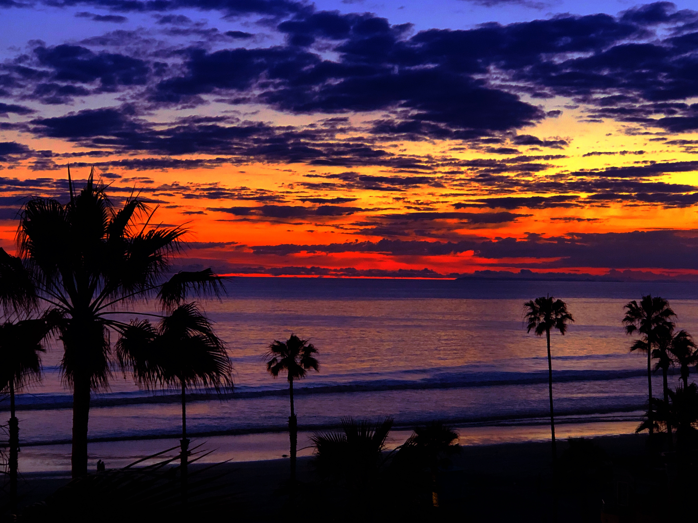
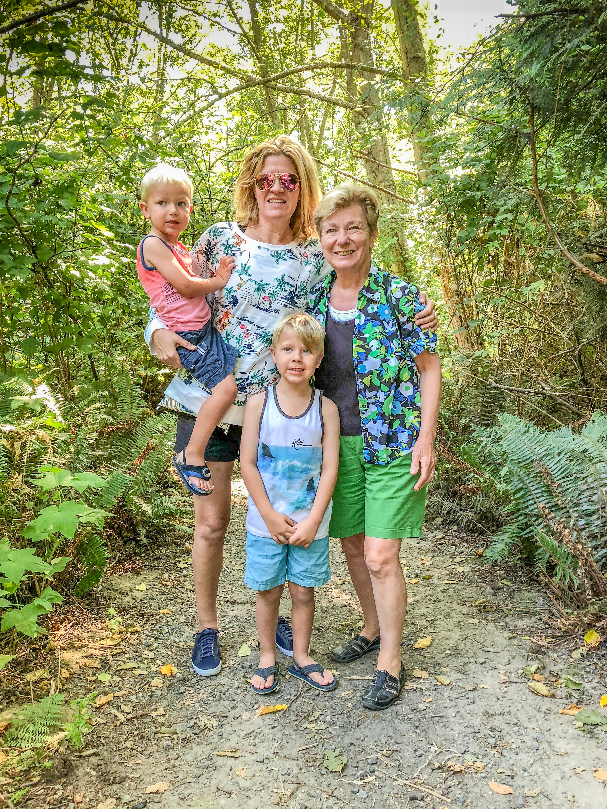
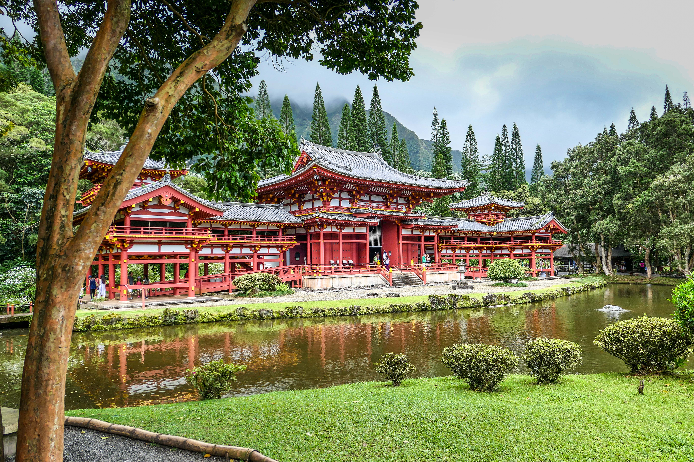

Marv's Post Archive
GEB
May 25, 2020
#book #idea
After my third reading of GEB in the past 20 years I’m still not sure what the book is about? What’s the point? Here’s a diagram of general flow of the book:

Godel’s Theorem certainly plays a major role. That is, you can’t be certain of anything if you extend it beyond Number Theory. Formal Number Theory comprises much of the tome.
Just when I think I’ve nailed it he branches off into Bach’s Fugues. Apparently Bach accomplished the impossible when he composed 8 part Fugues.
Then there is Escher’s Drawings with their Strange Loops - another subject which delights the author.
Of course what book would be complete without a course on Molecular Biology that branches off into Brains.
Hofstadter’s main theme: To suggest ways of reconciling the software of the mind with the hardware of brain is a main goal of this book
In the final analysis the book is about uncertainty from Math, to music, to art, biology, to DNA, to brain functions.
The author covers so many subjects I can’t do justice to them all or any of them as a matter of fact. Therefore, I’m just listing a handful of the major topics
Godel
Incompleteness Theorem
Although they are gripped together Godless actually authored two theorems
Any consistent formal system F within which a certain amount of elementary arithmetic can be carried out is incomplete; i.e., there are statements of the language of F which can neither be proved nor disproved in F.
And
For any consistent system F within which a certain amount of elementary arithmetic can be carried out, the consistency of F cannot be proved in F itself.
Bach
- Fugue - Apparently Bach was the Fugue Master. He authored up to eight part fugues which is supposed to be impossible . What is a fugue: A contrapuntal composition in which a short melody or phrase (the subject) is introduced by one part and successively taken up by others and developed by interweaving the parts.
- Canon - A Canon is a type of Fugue: In a Canon, two or more voices are almost exactly imitating each other, but this imitation is subject to the rules of counterpoint. Basic canons have the second voice start the exact same melody with the same notes, only delayed.
Escher
Escher's work features mathematical objects and operations including impossible objects, explorations of infinity, reflection, symmetry, perspective, truncated and stellated polyhedra, hyperbolic geometry, and tessellations.
Euclid
- Euclid’s Proof
- Geometry
- Infinite Geometry
- Rigor in Math
- Elements by Euclid
Formal Number Theory
- Typographical Number Theory (TNT)
- Peano Postulates
- Natural Numbers
- Typographical Operations
- Propositional Calculus
Isomorphic
A main theme of the book. What does it mean: “Given two groups there is a corresponding or similar in form and relations”
Strange Loops
A main theme of this book. A strange loop is a cyclic structure that goes through several levels in a hierarchical system. It arises when, by moving only upwards or downwards through the system, one finds oneself back where one started. Strange loops may involve self-reference and paradox.
Escher’s art works are a good example of a strange loop.
Three Body Problem
In Newtonian Physics with more than two bodies the exact orbits cannot be exactly determined (a poor plain English definition). A popular example of the problem is the Sun, the Earth, and the Moon. The three body problem is a special case of the “n” body problem. Actually for all practical purposes the three body and “n” body problems have been solved.
Zen
A monk asked Master Chao-chou, "Has a dog the Buddha Nature or not?" Chao-chou said, "Mu!"
Computers & Software
- Charles Babbage
- Lisp
- Algol
- Artificial Intelligence
- Strange Loops & Intelligence
Theorems, Axioms, Rules
Recursion
Networks
Hofstadter’s Law
It always takes longer than you expect, even when you take into account Hofstadter's Law.
Fermat’s Last Theorem
Brain
- Knowledge vs Belief
- Know little of how they work
- What is Consciousness
Molecular Biology
- DNA
- RNA
- Messenger
- Transfer
- Proteins
- Strands
- Bases
- Enzymes
- Amino Acids
- Ribosomes
- Nucleotides
- Genetic Code
- Strange Loops Again
- The Origin of Life
- Central Dogma of Molecular Biology
DNA —> RNA —> proteins
Music & Creativity
May 20, 2020
#opinion
I was listening to the radio this morning, for the younger crowd it’s a legacy system that converts audio to RF and transmits the RF through the atmosphere. The RF is received by the device named radio and converted back into audio.. Gypsy by Fleetwood Mac was playing. I was struck by the beauty of combination of voice and instruments; started me thinking about creativity.
From what I understand the Stevie Nicks created the voice part alone one night on the floor of a Florist Shop. She was homeless and had convinced the Owner to let her camp out there in exchange for being sort of a night watch woman. Then sometime later she had joined Fleetwood Mac the group put it to music. Of course they recorded the song in a studio with much help and direction from the producer (not sure of the right term here).
The result was a work of beauty as far as I was concerned - especially the music. I don’t know the words but I love the voice. However, I must add I’m more of a sound person than a voice person. I don’t know more than a word or two of some of my favorite tunes.
All this leads me to the question “Why are some people so artistically creative and others like me (Engineers) are what I guess you call creative but in a totally different direction?” Why can I develop a digital signal processing (DSP) algorithm on a computer but can’t hold a tune let alone create one? I guess I should be happy we are all created differently and not worry about what I can’t do?
The Club
March 10, 2020
#book
Finished The Club by Leo Damrosch this morning. 399 pages. The Club is a group meeting on Friday nights at Turk's Head Tavern to mostly discuss almost every subject under the Sun but also to eat and drink.
Before starting the book I imagined much of the story would be about their Friday Night discussions. But not one Friday night event was documented in the book. Rather the story whirled around the lives of the Club's members who for the most part were the giants of the literary, artistic, academic, and political community - basically the leaders or their age minus the Monarchy.
The Club centers around the literary giant Samuel Johnson and James Boswell., the man who immortalized his words of wisdom. Other members included Adam Smith, Edmund Burke, Edward Gibbon, and Joshua Reynolds. They and others warranted their own chapter in the Book.
As well as learning more about these men and women I also gained much insight into Life in general during that Age. I’m really glad doctors don’t lay hot coals on my back to produce blisters from which “evil humors” can be drained.
San Diego
March 10, 2020
#blog #travel #california
.
We took a short holiday in San Diego the latter part of January this year to escape the cold weather. As it turned out the Dallas weather was very warm this January but San Diego was still better.
Highlights
- Liberty Market - Food Hall near the airport. Great place for a meal after a long flight
- The Nolan - Roof top bar with a great view of the City
- Ironsides Fish & Oyster House - Little Italy Restaurant with top flight seafood
- La Jolla - Drive the backroads up to La Jolla. Lunch at George’s on the Cove Rooftop Bar. Visit some village galleries like the National Geographic. Stroll down to the Children’s Pool and watch the seals and sea lions sun on the beach
- Las Olas on the beach in Encinitas, an old time Mexican restaurant across 101 from the beach. It’s been there for decades but the food is great
- Cucina Urbana - 5 star Italian uptown
- Balboa Park - its more than the zoo. There are 17, I think, museums there. We visited 5. They had to kick us out of the museums when they closed at 5PM

TL;DR
Jan 26, 2020 at 9:03 PM: Flight to San Diego was on time and smooth. Can’t ask for much more on a plane flight.
Lunch at Liberty Market. Similar to Legacy Hall in that it has many small food stalls. Very good and close to the Airport.
Checked into the Wyndham Harbor Lights and rested for awhile.
Walked to The Nolan, a rooftop bar close to the Harbor for a drink and mid-afternoon snack.
Back to the hotel for awhile
Walked to Ironsides Fish and Oyster House in Little Italy for dinner. Sat down and the gentleman and lady next to us asked “Were you at The Nolan this afternoon?” Turns out they sat next to us. We had an enjoyable conversation during dinner. It’s a small World Charlie Brown. Dinner was excellent topped off by top notch cappuccino and espresso
Jan 27, 2020 at 8:24 PM: Exercised at OTF this morning and then bagels.
Drove the back roads to La Jolla and had lunch at George’s on the Cove Terrace overlooking the Pacific. Breathtaking view and Excellent food and drink. Could have stayed there all day.
Next we walked around stopping at a couple of galleries
- National Geographic Portraits - almost all wildlife photos. Unbelievable the clarity of the photos. Biggest problem besides the cost, which we did not ask, which has to be in the Thousands was the size. The smallest are close to a meter high. A few were 2.5 meters wide. The Yellowstone Bison was my favorite. I’d sit in the library and stare at it for hours if it were mine. It’s a Winter scene. The Bison is blanketed with snow which is steaming off because he’s walking over a hot spring.
- Navajo Painter R. C. Gorman Gallery - The American Picasso. Focused on flowing Southwest scenes many with women. I’d take one of these home also if I were $$$$.
Then we walked down to the Children’s Pool, a sheltered cove on the beach constructed in the 30s so the local children would have a safe area to swim in the Pacific free from the surf. The cove was created by building a curved wall into to the ocean. Turns out the local seals found the cove and congregate there to catch some rays on the beach making the Pool a great place to watch the seals.
Then back to the hotel for an hour or two.
Late afternoon we drove out to Pacific Beach and strolled along the Boardwalk as the Sun set over the horizon.
Last stop was the Backyard which is a Pacific Beach Sports Bar. Cool interior and patio but average Sports Bar fare
Jan 28, 2020 at 4:09 PM: Exercised this morning. It was a tough one. After exercising came to the rental and discovered a parking ticket on my windshield for $42.50 because I forgot to put money in the meter — STUPID.
So bagels at Panera’s again for breakfast to save money.
Decided to visit the San Diego Botanical Garden today in Encinitas. On the way we stopped at Las Olas on the beach in Encinitas. Great Mexican Food! Then off to the Botanical Garden. Most of the plants were from the Arid Regions of the Planet. Very interesting even in January.
Jan 28, 2020 at 8:26 PM: Dinner at Cucina Urbana. No its not near the University of Illinois. It's in San Diego and very good Italian. 5 stars in my book.
Jan 29: No exercise today. Breakfast at Brian’s 24. Good ratings and reviews. Brian must have been flooding Internet with reviews because the restaurant was mediocre to say the best
Spent the day at Balboa Park in the Museum area. We bought the 1 day Explorer pass for $48 a piece which gets us admission to 5 of the 17 museums and the iMax if we visit the Science Discovery Center as one of the museums. Did not know how long we would be there but we ended up leaving as they closed the museums at 5PM. By the time we arrived we were hungry so before we visited the museums we grabbed a bite to eat at Panama 66 - Open air sandwich and craft beer location. Very good.
The 5 museums were:
- Model Railroad - Number one on our list. The largest model railroad exhibit I’ve ever seen. There are 4 different gauge exhibits and they are all very large
- Air and Space - Number two on our list
- Fleet Science Center - For kids, but go for the iMax
- Photography - Specialized. I enjoyed it because I’m a photographer
- Automotive - Go if you like Low Riders
Topped off the day by dining at Searsucker. Good but minimal mains menu but lot of starters.
A word about our Time Share - Great location and up to date room. For some reason they were very low key trying to get us to listen to their salesperson. Maybe all Timeshares have the same model and maybe they don’t, However Wyndham’s is you buy shares in a resort. You receive “points” which you an use at any resort. Every time you stay at a property they want you to visit the Welcome Center whose purpose is to get you to signup for a free Information breakfast. Turns out in every case its really an attempt to get you to buy more shares in a Wyndham Property so you can have more “points”. I always turn them down.
Jan 30, 2020 at 9:18 AM: At the airport ready to fly home
For more photos Click Here
Steamboat 2019
February 20, 2020
#SteamboatSprings #Colorado #travel
We traveled to Steamboat Springs September 2019 in an attempt to see Aspens in Fall Color. Planning a trip to see Fall Color is like a crap shoot. This year we rolled Snake Eyes. The Aspens were just starting to turn in a few areas. Next time instead of September 15 we’ll try October 1.
Nevertheless, we still had a wonderful vacation in the Mountains. Steamboat has become one of our favorite places.
Highlights
- Creekside Cafe - Best breakfast in Steamboat
- Mazzola’s - Best Italian restaurant in town even if its in a basement
- Food Tour - Great eperience, some good food and learned much about Steamboat history and present day
- off the Beaten Path - Great Bookstore
- Rabbit Ears Trail - Best hike we took - starts at 8,900 feet so take your time
- Arapahoe Cafe & Pub - Great lunch in Silverhorne
- Avalanche/Stars game in Denver
- Four Friends Cafe - Great breakfast in Denver
TL;DR
Sep 15, 2019 at 11:40 AM Landed in Denver
Sunday, September 15, 2019 - 1:09 PM: Lunch at Four Friends in the Stapleton Area.
Sunday, September 15, 2019 - 3:54 PM: Drove to Breckinridge. We are staying at the Residence Inn which is on Southside edge of downtown - walking distance to bars, restaurants, and shops. In town everything is in walking distance. It’s a small compact downtown. At 9,600 feet everything should be close because you can’t walk very far without having to stop to catch your breath.
17:49: dinner at The Canteen
2019-09-16-Monday 08:47: breakfast at Cool River, a backdoor kinda Hippie place. I doubt our daughter’s family would frequent. That was mean of me. If it was the best breakfast food in town they would eat here.
09:45: slept poorly last night and have a headache today. Maybe sinus headache?
8:49 PM: Drove to Steamboat and ate lunch at Winona’s. Supposed to be great but just okay in my book.
Then we took in Fish Creek Falls Took the easy trail. We are still accumulating to the Altitude. After that we drove up past Clark to Steamboat Springs Lake State Park hoping to see the Aspen’s turning color. I’m afraid we re a couple of weeks early. We could see them just starting to turn in a few groves.
Dinner was at Mahogany Ridge Brewery
Sep 17, 2019 at 4:49 PM:
Woke this morning feeling really rested at 6:30AM. Laid in bed to ascertain if people that can “Sleep In” really wake up at a reasonable time and lay in bed awake. By 7AM I could not take if anymore and got up
We had breakfast at the Creekside Cafe. Very good and it was very good every time we have been there.
Then we toured the Yampa Botanical Gardens. Always interesting to see what grows in other parts of the Country. I recognized a few plants but most were foreign to me.
Lunch at The Shack. I would eat there again. They had a typical American Menu but leaning heavily on the Breakfast Side.
Spent some time browsing at a cozy bookstore - Off the Beaten Path
After lunch we decided to drive out and hike Rabbit Ears Peak Trail. Half way there the road was blocked with a bad accident. Therefore we turned around and headed for Option 2 - Mad Cow Creek. We started up the trail but was too steep and too much horse dung for Gwen so we opted to hike the West end of the Yampa Core Trail. We had a time out for a gentle rain shower.
After the hike we headed back to the Wyndham for a rest and answer some email.
Dinner at Mazzola’s, definitely the Best Italian restaurant in town even if its in a basement with no view.
Sep 18, 2019 at 8:59 AM: Fire on the Mountain this morning in one of the multi-unit condominiums. Hope now one was injured.
Staying in the Condo this morning. Food Tour for lunch starting at 11AM
The Food Tour was a great experience. Sampled some fantastic far from 4 different restaurants, educated about olive oil at an Olive Shop, and received a Steamboat Springs History lesson.
19:38: Dinner at Carl's. I had Buffalo Meatloaf, very good
Sep 19, 2019: Last morning in Steamboat. Breakfast at Freshie’s. Average fare. Can’t hold a candle to Creekside. Coffee is standard weak restaurant coffee.
Packed up and drove up to Rabbit Ears Trailhead. Trail starts out at 8,900 feet. The morning was cold and windy. The Sun was out. A perfect day for a hike. We hiked up the Mountain for about an hour and turned around. Had to stop every once in awhile to catch our breath. It’s a little harder to breath at 9,500 feet when you are exercising.
After the Hike drove towards Denver. Stopped in Silverhorne on the way at Arapahoe Cafe & Pub, a small place in operation since 1945. I would stop there again. Better than the fast foods options in I70.
Drove to Denver. Discovered the Stars were playing the Avalanche in the Pepsi Center so we took in a Stars game. Sat on Row 9 just behind the Stars bench. Great way to watch a game.
Sep 20, 2019 at 10:53 AM: Up this morning early as usual and had breakfast at Four Friends. Second time we have eaten there in a week.
Then the flight home
For more photos Click Here
Reunion 2019
January 15, 2020
#blog #travel
We agreed to have our Family Reunion in Grand Haven Michigan this year. It’s a tourist town on the shores of Lake Michigan. Turned out to be a great location. All the brothers and Sally showed up this year along with Sally’s boys and Brian’s family . Turns out out VRBO was a great meeting place and we spent a lot of time there including evening meals.
The rest of the post is a timeline of the reunion.
August 21: We flew to Detroit for the Olson Family Reunion. We are meeting in Grand Haven, well some of us. The rest got mixed up or something because they are all staying in Grand Rapids 40 minutes away.
The Reunion starts tomorrow so we are staying in Ann Arbor tonight. Tomorrow we are going to the Gerald Ford Presidential Library before heading out to Grand Haven .
Turns out there are two Gearld Ford Presidential Libraries. Ann Arbor houses the Research Library and Grand Rapids is the museum that details his Life and Presidential years..
We had dinner at Grizzly Peak Brewing Company in downtown Ann Arbor. I had a unique dish - steak sandwich which was different because the bun was a pair of potato cakes
August 22: Breakfast at Panera’s the off to the Gerald Ford Library at Michigan University.
Lunch at the Lansing Brewing Company. Quite a place. Been brewing beer since 1898. Food was very, very good. Beer was good also.
Arrived at the VRBO in. Grand Haven at 3:30PM. Explored the town and the bay leading out to Lake Michigan. Dinner at TJ’s. Just a tired of 1950s steak house trying to stay in business. Most of the clientele order the special because its cheap and iced tea to drink.
August 23: Breakfast at the Morning Star, reputed to be the best breakfast in Grand Haven. They are right! Especially loved the dark roast coffee in a warm pint glass. Great touch.
Sally’s came over around 10. We went downtown and walked around for a bit. Wanted to walk to the Lighthouse but I it’s closed for repairs. Lunch at Snug Harbor which has a view of the harbor. Surprisingly good. Many times places with a view make up for the view with mediocre food.
After lunch I drove to Grand Rapids to pickup Bob who flew in from Dallas.
Jim’s arrived - Nancy, Brian, Michelle, and Erin. Shortly after Jerry showed up so the whole gang is here.
There were so many of us - 14 - we decided just to have pizza. Everyone had a good time and left early enough to give us some peace.
August 24: Breakfast at Panera’s. Then drove to Grand Rapids to the Gerald Ford Presidential Museum. One of the most interesting things about the Presidential Museums is how different they were. Ford’s pretty much covered his whole life with an emphasis on his years in Congress. Also, there was a special exhibit of photographs taken by his official photographer while he was president.
After the museum we walked a couple of blocks in downtown Grand Rapids to have lunch at Roam, a little place that featured dishes from around the World. I had the “felschbrauten”, a fish dish from Germany, - a plate of fish, onions, and horseradish.
The afternoon event was the Meijer Botanical Gardens. Compared to the Arboretum it was huge and different. We toured the Conservatory and the Japanese Gardens. The Conservatory contained 17 separate environments from Desert to Rainforest from Northern Michigan to the Equator. The Japanese Garden was huge and much more Sunny than any I have seen.
Everyone returned to our place for Dinner where Gwen and Dustin prepared a delicious meal.
August 25: Breakfast at the Morning Star. Then we walked to the Grand Haven Lighthouse at the end of the Pier. Then off to Grand Rapids for lunch at the Greyline Brewery. Then we dropped Bob off at the airport for his flight. Then we took in the local zoo (John Ball Zoo). Then we drove to the Detroit Airport where we booked a room at the Airport Hampton Inn. It was by new but almost empty so they gave us a really great room. We were tired so we had dinner at the Gastropub in the Sheraton a few blocks away. To say it was good was an understatement. Gwen has the fish and chips and cleaned her plate clean. I’ve never seen that happen before. Its very unusual for a hotel restaurant to be this great!
August 26: Flying home
For more photos Click Here
Why does the World Exist
December 10, 2019
#philosophy #book
Just finished reading Why Does the World Exist by Jim Holt. The real title of the book should be Why is There Something Instead of Nothing.
The book is a tale of the author searching for the answer to the question “Why is there Something Instead of Nothing” by interviewing a bevy of philosophers with view on the subject.
In the end there is no answer and the candidate boil down to:
- Religion - God is the reason
- Science - Mostly some form of quatum mechanics from Heisenberg’s Uncertainty Principle to various incarnations of the multiverse
- Buddhism - The Universe always was. There was never a beginning and thus never Nothing.
I especially like the quote at the end of the Book: Philosophy, A route of many roads leading from nowhere to nothing - Ambrose Pierce
Northwest 2019
November 15, 2019
#travel #Seattle #Victoria #roadtrip #mercedes #wallawalla
In which we flew to Seattle, spent a few days in Victoria and Marv drove a Mercedes Convertible back to Dallas
July 28: Flew to Seattle after a 1.5 hour delay because of a maintenance issue. Took the Light Rail to downtown Seattle and then walked to the Marriott Waterfront. Changed into exercise clothes and walked back up the hill to the nearest Orange Theory. Again, this Orange Theory is much larger than our Allen Orange Theory. We had dinner at the hotel restaurant. It was nothing to write home about but just okay. Then to our room for an early night.
July 29: Up at 5:30 and walked to the Clipper Terminal for the cruise to Victoria. We are in “Comfort” class which I guess is like 1st class on a plane. Very “comfortable”. a half hour into the 3 hour cruise we encountered dense fog. So nothing much to see until the fog lifted and w were graced by a view of Victoria in the distance.
After arrival we walked our luggage up to Abigail’s where we always stay and then walked back to the waterfront to The Local for Fish and Chips with local brews. The Fish in the Fish and Chips here is Halibut. It’s something you must sample here. It’s like having Walleye on the North Coast of Lake Superior.
Next we strolled up and down Government Street, the main shopping area in Victoria. Sort of like Michigan Avenue in Chicago. Stopped at Munro’s Book Store.
Munro’s Bookstore may sound familiar to you because the Munro’s (husband and wife) opened the bookstore in 1963. Alice Munro (the wife) won the Nobel Prize for Literature in 2013 for a collection of her short stories
After Munro’s we went next door to Murchie’s for coffee and tea. They have been in business 125 years. They still brew and sell great teas and coffees
Back to Abigail’s for an afternoon nap.
Dinner at Nautical Nellie’s, a local steak and seafood establishment with dark wood paneling and lots of mirrors. Dinner was very good. I had the “Northwest Paella”.
July 30: Light comes early to the Northwest this time of year - 5ish. And thus a cacophony of sea gulls awaken us.
We tried out the local Orange Theory this morning,. Different Country and different customs; they all bring their gym shoes and change into them, but they don’t clean off the stations until the class is over. Since we came from a different Country they gave us a pass and let us wear the shoes we walked in on.
Then, back to Abigail’s for breakfast which is as good as I remembered.
After breakfast and cleaning up I rented a car from National. Remember to rent from Budget the next trip. They are much cleaner and larger and in the same location - both walking distance.
We drove us the Coast stopping a several points to take in the ocean, the sea breeze, the salt water smell, the brown coastal tall grass blowing in the wind, and of course the ever presents sea gulls.
Stopped at the Oak Bay Marina for lunch. A most unusual menu. It’s clear they favored presentation over quantity. I had the fish cakes with Chutney. The food was both an unusual mixture and delicious. I would definitely go back again. Plus, the staff were friendly and very helpful.
We went as far as Sidney. Then back to Abigail’s and a walk downtown to Merchie’s for afternoon tea.
Dinner was at Il Terrazzo, our favorite restaurant in Victoria. It did not disappoint tonight either. Their Italian Seafare is by far the best I’ve ever had. But tonight I choose “Linguine with Meatballs” for a change of pace. Seems like I’ve been eating seafood for a month straight starting with our recent two weeks trip to Minnesota. Tonight’s fare was just as good as everything else I’ve had at Il Terrazzo.
Il Terrazzo’s atmosphere is noisy and “frazzled”. You don’t go there for a quiet candlelight dinner. You do go there for the food and the atmosphere. The Bohemian tone is set by walking down an alley to enter the establishment. Inside there are basically two large rooms. One is an actual inside structure with real walls. The second is an enclosed courtyard (maybe) with a translucent roof. All the tables are close together and they are always occupied. If you want to dine at Il Terrazzo reserve a table a couple of weeks before you plan to arrive.
July 31: Another morning at OTF, breakfast, clean up, and then we drove up to Goldstream Provincial Park for a hike. I originally wanted to stop here to hike to “Niagara Falls”. Yes there is more than one, but this is their dry season and the river was hardly flowing. So we deemed hiking to the Falls not worth the effort. So we hiked along the river to the mouth where it enters into the Sea.
After the Park we drove to Duncan for lunch at the famous Dog House Dinner, in business for 61 years. Good inexpensive diner food and very clean and very popular.
Today’s plan was to cruise up Canada Highway #1 without a plan. Our other stops were the port city of Nanaimo, a hike in another obscure Provincial Park, and back at Duncan for the Totem Pole Walk.
Nanaimo was large but not very interesting.
Apparently we were the only people in the World that could find the Park. During the hike its as if we were the only people left on the planet. Very quiet and peaceful
The Duncan Totem Pole Walk is worth a brief stop. They have erected 38 totem poles through the downtown area. With each there is a plaque explaining the totem figures and a biography of the First Nation Artist.
Later back in Victoria we dined at a small neighborhood restaurant, Cafe Brio. Also, Italian but the atmosphere was the opposite of ll Terrazzo- small and quiet. The menu was rather eclectic but both our meals were “most excellent”. If I had to choose between the two it would have to depend on my mood that evening.
Thursday, August 1, 2019 - 7:20 AM: We started August in Victoria, B.C. Unfortunately we are leaving today. The cruise back to Seattle was a non-event. Very smooth all the way ion a sparsely populated ship. United States Customs is strange. They check us in both Victoria and after arriving in Seattle.
Back on land we caught a Uber to Carolyn Martin’s to pick up the Mercedes Convertible I’m driving back to Dallas. Uber - this was my first Uber experience and was very easy. I was surprised.
We had dinner at Sean and Janet’s. We had a Vegetarian Dinner (Cold Vegetable and Pasta). I was surprised but it was very good, even the Pasta.
Friday, August 2, 2019: Dropped Gwen off for her flight and did Master Gardener stuff until 10AM and then drove to Walla Walla for the first leg of the trip. Leaving Seattle was a nightmare there was a 26 minute back up on 405 so it took me through side streets for 40 minutes. The rest of the drive was easy and enjoyable. Over the mountains and then onto rolling brown hills. Part of the drive was along the Columbia River. There are Orchards and Vineyards everywhere - A Very Beautiful Country.
Arrived in Walla Walla to 98 degree weather but it did not feel bad. Staying in a Hampton Inn in a strange part of town. Industrial! But the hotel was good.
Aug 3, 2019 at 8:50 AM: I’m sitting on a Starbucks Patio in downtown Walla Walla on a cool Saturday morning having a cup of Joe and watching the locals. Downtown Walla Wall-a is a quaint, neat area full of shops and restaurants. It’s very peaceful. Have they outlawed Walmart and other big box stores here? Downtown is like stepping back into the 50s.
Left Walla Walla a little after 10AM. Just out of town I crossed over into Oregon. Driving through Northeastern Oregon there's wheat fields everywhere with huge mountains of harvested wheat. I assume they're going to ship them later.
Arrived in Boise at 3PM to 102 degree heat. But as they say it’s a dry heat. The drive from Walla Walla was not as scenic as the drive to Walla Walla. Eastern Oregon and Idaho to Boise at least is hilly and dry. Large areas of wheat fields interspersed with grazing land.
Where Walla Walla was a small city with a compact and bustling downtown Boise is an order of magnitude bigger without the charm of Walla Walla.
Aug 4, 2019 at 8:38 AM: woke up at 5:30 this morning. Exercised. Breakfast was okay. No yogurt! Watching the Hungarian F1 before heading out from Boise to Salt Lake City

Arrived in Salt Lake City about 3PM.. Took me 5 hours. I’m staying at at the Home2 Salt Lake City East. Dinner was at Wasatch Brewery. Long drive tomorrow. 7 hours if you drive straight through. So I’m trying to leave around 7.
Aug 5, 2019 at 4:26 PM: Horaay, The Mercedes and I arrived in Farmington NM after 8 hours. We drove though some pretty Country today and some desolate Country also. I was surprised Utah around Monticello and Western Colorado around Cortez is pretty settled and a lot of Farm Land.
Guess where we are overnighting — at the Home2 in Farmington. Nice place but the town is nothing to write home about.
Dinner was at the best restaurant in town according to Trip Advisor - Three Rivers Eatery & Brewhouse. And it was darn took. Had my first Hatch Chile’s in quite awhile
Aug 6: Slept like a log last night. Best rest I’ve had since I put Gwen on the Plane.
The itinerary today is Farmington to Amarillo.
9:35 AM just went over the continental divide on US 555
Lunch in Albuquerque at Garcia’s, which is a local chain of low priced New Mexican food. I had the Green Chile Stew. Awesome! Right now I’m thinking we should move here so we can eat the steps every day.
Arrived in Amarillo at 5PM just 8 hours after leaving Farmington.
In Amarillo tonight with a west wind. If you’ve been here you know the whole city smells like cattle manure
Wednesday, August 07, 2019 - 05:03 PM:
- 7:30 in the morning leaving Amarillo headed for home
- 8:45 in the morning on the road between Amarillo in Fort Worth and it's already 91° here going to be a hot one
- Stopped for lunch I Wichita Falls
- Home at 2:30PM
- Somewhere along the way August hit me with a vengeance. I started out in Seattle at 59 degrees and ended in Fairview at 101 degrees.
For more photos Click Here
Stalingrad
October 24, 2019
#book
Stalingrad is a historical novel by Vasily Grossman chronicling the WWII Battle of Stalingrad. Spellbinding reading about the battle from the point of view of a Russian following the experiences of an extended Stalingrad family before and during the 1st few days of the Battle.
The book reminds me of the style of another great Russian author - Dostoyevsky in the way it weaves the tales of numerous Russians along with the terrible battle of Stalingrad.
The book was written during the early 1950s. Very interesting to read about this part of WWII from a Russian Author living in Communist Russia. One has to wonder how the book would have turned out if Grossman had the luxury of living in a free and open society. To catch of glimmer read the sequel - Life and Fate completing the Battle of Stalingrad which never got by the Censors. In fact they even burned the typewriter ribbon the sequel was typed on
The first half of the book introduces the main characters and we are well over half way through the 1100 page book before the battle begins.
The Battle is very different written from the perspective of Russians. The accounts I’ve read in the past have been by American and British Authors who describe the battle from an antiseptic point of view. Of course have never read an account by a German
The first week of the battle itself pretty much destroys Stalingrad. After that its a grueling artillery/tank/infantry struggle. Hell on Earth!
The geography if Stalingrad is very important in the fighting of the battle. The cities is on the West Bank of the Volga and there are massive bluffs at the West side of true City. So Stalingrad is trapped between the bluffs and the Volga
Reading the account makes me want to visit including the gigantic war memorial. Alas, I know that will never happen.
Recommendation: 4.5 starts out of 5. Get your computer out now and buy a copy. But only if your willing to read the tome and then the just as long sequel - Life and Fate because you will want to after putting down Stalingrrad
Northland
#canada #border #book
Northland A 4,000-Mile Journey Along America’s Forgotten Border by Porter Fox
Just finished reading Northland and thoroughly enjoyed it. The book traces the author’s journey along U.S./Canadian border from Lubec, Maine to Belllingham, Washington. The author provides graphic descriptions of the landscape, lively conversations with the people he encounters along the border, and enlightening narratives of the border’s history.
Not sure how to categorize the book? I guess a travel book is as close as any. One could also say its a Nature book or a History book. I just call it a good book.
It’s really eerie how things come in bunches. The author describes Minnesota’s Northwest Angle in one of the book’s chapters. Just by coincidence we visited that part of the Country this Summer. The same week the Northwest Angle played a prominent role in a Science Fiction book I was reading in parallel. Until this week the Northwest Angle had not crossed my mind in 25 years or more. It’s a strange World.
Just to give you a flavor of the History in the book once entire section is titled The Medicine Line. During the 19th Century the Plains Indians called the border between Canada and the United States the Medicine Line, because during the 19th century Indian wars American troops respected it as if by magic. If the Indians could reach the 49th Parallel (The Medicine Line) the Calvary would halt if by magic and thus the Indians would be safe again. Of course the Battle of Little Big Horn is covered in the book. After the battle Sitting Bull and Crazy Horse hightailed it to The Medicine Line and Safety.
Good reading until the next time. Marv
Minnesota
#travel #minnesota #lakesuperior
The trip’s purpose was to celebrate Mom Marie’s 90th Birthday in Wabasha, Minnesota. Plus, I’ve always wanted to explore Lake Superior’s North Shore so we took the opportunity to experience both. After the Celebration we stayed in Minneapolis a few days to take in a Twins Game and visit the Minnesota Landscape Arboretum where VIcky’s cousin is the Lead Horticulturist.
The remainder of the blog is in present tense timeline form. If you are interested in a particular section just jump to it
TL;DR
Lake Superior
Tuesday, July 9, 2019 - 8:52 AM: At DFW waiting for our flight. The gate has changed 4 times since we arrived. Looking forward to this Holiday. Should be our most relaxing every. 3 nights on the shores of Lake Superior, 4 at Wabasha on the mighty Mississippi Southeast of the Twin Cities, and 3 in Minneapolis.
Jul 9, 2019 at 9:17 PM: Made it to our VRBO in Tofte. It’s on Lake Superior and the view is great. The biggest problem appears to be the TV. There is no remote for the Direct TV Box. So, I tuned it manually using the up/down arrows on the Direct TV box and the TV cuts off 1/6 of the picture on both the left and right side. Could not raise the contact. Will try again in the morning.
However I’m getting ahead of ourselves. On the road we stopped in Duluth along the way at the Back Country Grill. Very good place. I had the Walleye and Gwen had a Chicken Pot Pie.
There is no Sunshine at all today. Overcast with temperatures in the 60s.
July 10:
Woke up to another drab day. Fog rolling in off of the Lake. Reminds me of the “June Gloom” Sara described from her days in Santa Barbara. Exercised in the room and then. Breakfast at the Blue Fin Grill in Tofte, part of an upscale resort. Noting to write home about. Very upscale restaurant but we were the only Customers with good reason. Very mediocre and expensive. Don’t eat there!
After the disappointing breakfast a genuine delight. We stopped up the road at the Fika Coffee Shop in Lutsen. Now they have good cofffee. Fika is a Swedish term meaning to take a break and relax with a good cup of coffee. That’s just what we did - every day on Lake Superior. The really good news is I can order it from home!.
After Gwen managed to drag me out of the Coffee shop we drove Northeast up the Coast to Grand Marias, the largest community in the area with 1,000 souls. We departed the car and walked around the harbor area for a bit. The Fog was so thick I’m sure I could have cur it with a knife. The Fog did lift and roll back in several times during the walk. Reminded me of Steinbeck’s descriptions of Monterey in Cannery Row
The highlight of the day was hiking out to the Lighthouse at the Harbor entrance. The hike involved “tightrope” walking on narrow concrete ledges and scraping over piles of boulders. Great fun!
After the hike Gwen was hungry and picked out a highly reviewed restaurant Poplar House. She keyed it into Google. Turns out the restaurant was 45 minute drive up the Gunflint Trail deep into the Lake Superior National Forest. The food, beer, and view were excellent. Later I checked the restaurant out on Google. Turn out they paid for ads on Google so popped up first on Google when she searched for restaurants. Very smart, no telling how many customers were because of the ad.
Our plan afterwards was to drive to the Grand Portage National Monument. We made it, toured the Visitor Center but just as we walked outside the bottom fell out of the sky and the rains came down like a wide open faucet. That was it for the rest of the day.
Grand Portage National Monument
The Grand Portage National Monument, entirely within Grand Portage Indian protects two depots of the North West Company, the main depot on Lake Superior and the site of Fort Charlotte on the Pigeon River. The 8.5 mile Grand Portage trail connects the depots and contains most of the acerage of the Monument.
When the French ceded Canada to Great Britain in 1763, traders of the North West Company moved in to take advantage of the burgeoning fur trade. Although based in Montreal, the company’s inland headquarters was on the Grand Portage, an 8.5-mile footpath that allowed travelers to bypass the Pigeon River Rapids.
The North West Company hired voyageurs to transport furs and other goods between Montreal and the Canadian Northwest. To meet the demand for furs and to cover the territory between the Great Lakes and Canada’s extensive fur country, these voyageurs separated into two groups. One group traded for furs in Canada’s Northwest Territory. The second group meant them in Grand Portage’s Inland Depot to take the furs to the Company’s headquarters in Montreal.
The North West Company’s Grand Portage Depot was the site of the annual gathering that allowed partners, clerks, traders, voyageurs, Indians, and anyone connected with the company to wait out the long winter months. Known as the Rendezvous, which in French means "a meeting or assembly," this winter gathering was both a commercial and celebratory event. The Rendezvous was a great opportunity for trappers, traders, voyageurs, and Indians to display and trade furs, liquor, supplies, and other goods while dancing and feasting through the night. The partners and their guests usually ate and drank inside the Great Hall. The Ojibwe dressed in their ceremonial garb and the voyageurs in their best attire hosted their own celebration outside the palisade.
Dinner was at the Cascade Lodge between Lutsen and Grand Marias. Average food and terrible service. But probably good for that part of the World. In a land where there are not many people the restaurant options are limited. Translated: Don’t come here for a culinary experience. Also, they all know how to grill Walleye.
Jul 11, 2019 at 7:00 AM: Bright and Sunny morning. Looking out on the Lake I can see forever.
Breakfast this morning in the VRBO. Then off to Fika, after two days my favorite coffee shop.
After picking up a couple of brews at Fika - coffee for me and iced tea for Gwen we drove up to Grand Portage and hiked to the High Falls on the Pigeon River. They are the highest waterfalls in Minnesota. The drive and the hike were definitely worth the effort.
Lunch was next on the agenda but if you in far North Minnesota on the North Shore you don’t read restaurant reviews you just stop in at the only place for dozens of miles and hope the fare is edible. Therefore it was with a more than small sense of trepidation we parked the car at the Naniboujou Lodge . Needless to say we were more than pleasantly surprised to find the food simply delicious. I already knew the decor was outstanding from m research. The restaurant is located in the Common Room and is decorated, including the ceiling, with Cree art and symbols.

Naniboujou Lodge
Wealthy businessmen from Duluth planned a resort on 3,330 acres along the and announced the project in 1927. The name selected was that of a Cree spirit of the woods. Ground was broken in 1928, and the club opened for business in 1929, a very bad year to open a business Financial difficulties during the Great Depression led to foreclosure in 1935. The facility was sold in 1939. Since then the Lodge has had a number of owners. The current owners are Tim and Nancy Ramey (since 1982).
The lodge advertises “Quiet Elegance on Lake Superior”. Now known as Naniboujou Lodge and Restaurant, the property is a privately owned hotel and restaurant. The sleeping wings contain the hotel rooms, and the former common area, still bearing its original decoration, is now the dining hall.
Facilities include a restaurant, in the former Great Hall club commons, and a solarium. Lake Superior and the Brule River adjoin the 9-acre plot on which the resort is located.
After lunch we drove down to Grand Marais, strolled around the village for a bit and stopped in at the Java Moose for a coffee. In the far North it seems coffee is a staple of life. Coffee shops abound.
Finally we stopped at the Cascade River State Park and hiked a short distance to the waterfall. After the High Falls they are a disappointment - a series of short waterfalls, thus the name cascading waterfall.
Dinner was at Harbor House Grill in Grand Marais. It’s an old house looking out at the Harbor. We dined on the front porch with a fine view of the harbor. Hint: you can’t go wrong with grilled “Walleye” in this part of the Planet. It’s on every menu and usually very good.
90th Brithday Party (Wabasha)
Jul 12, 2019 at 7:46 AM: Woke to a light rain this morning. Breakfast at the VRBO, coffee at Fika Coffee in Lutsen and then off on another adventure to Wabasha, Mn.
About an hour into the drive we stopped at the Gooseberry Falls. They are the most popular waterfalls in Minnesota for good reason. There are 3 waterfalls, all very magnificent. People can frolic in the shallow, cool waters above and below each waterfall. I’m actually very surprised the Authorities allow such fun. I can imagine people getting too close to the Falls and tumbling over the waterfalls.
Next stop was the Ledge Rock Grill in Two Harbors. Decent food but I suspect most of the Customers are people staying at the Lodge because its a detour to get to no matter where you are traveling. Then through Duluth, Superior Wisconsin, and down US 53 in Wisconsin towards Wabasha.
Arrived in Wabasha a little before 6. Seems like a nice little community on the banks of the Mississippi down river from the Twin Cities. Found the Condo. It is “air conditioned”, but up here that means a window unit in the bedroom. The rest of the VRBO is quite warm because of a heat wave.
Everywhere we travel the locals tell me the area is experiencing a “heat wave”. Could it be “Climate Change”?
Dinner at the Tirangle Pub, an Irish pub in downtown Wabasha. Good food and excellent conversation with the bartender/owner.
Jul 13, 2019 at 11:02 PM: First full day in Wabasha. Breakfast at Stacy’s Kitchen in downtown Wabasha. Gwen liked it so much she tells me she is coming back tomorrow.
Arrived at the Rowekampe Family vacation house in Lake City at 10:30AM. Visited with them until Noon and then headed out to Lewiston for the Rowekamp annual picnic. Mom Marie rode to the picnic with us and kept us mesmerized with stories or her childhood, teenage years, marriage, and moves across the Country to Buffalo. When you are 90 and you grew up in rural Minnesota you remember life without electricity, plumbing, telephones, tv, or central heat.
I estimate there were well over 100 people at the picnic. We did not know anyone but still had a great time becoming aquatinted with new friends and watching children play.
Then it was back to Lake City to visit and eat dinner at the vacation house. Finally arrived back in Wabasha at 11PM.
Jul 14, 2019 at 11:12 AM: Just back from Breakfast at Stacy’s Kitchen with the Klack’s and Mom Marie and then to the local Catholic Church for High Mass.
The afternoon was Mom Marie’s 90th birthday reception in Lake City. Friends and relatives came and went all afternoon with many driving down from the Twin Cities and across the State.
Dinner at Slippery’s in Wabasha. Mediocre. If you have to have dinner in Wabasha stop by the Tirangle Pub instead
Jul 15, 2019 at 11:20 AM: Drove to Winona to Bloedow’s Bakery. Bought some delicious looking pastries and drove back to Caribou Coffee & McDonalds for drinks. My favorite pastry was the long maple and bacon covered eclair like pastry (no filing).
Bloedow’s opened it doors in 1924 and has been in operation ever since. Named the best donut shop in Minnesota numerous times most recently in 2017.
Traveled up to Lake City in the afternoon and visited. Dinner at the Lake House Restaurant with the Klack’s. I had t Walleye but it was below average “tasty”. Lesson Learned: Don’t order Walleye South of Duluth.
Just as we were finishing Mike stood up and said it’s time to leave. We arrived back at the house just as Armageddon reached us. Straight line winds had to b 80 mph and a driving rain and constant lightening. A sailboat was pulled from its anchor and went careening down the lake. A trailer was violently tossed across a parking lot. Very exciting stuff from inside the house. Glad we made it back
We drove back to the VRBO after the storm passed. US 61 was closed. The signs detoured us over the bluff on a very dark, wet night on an asphalt road. Very difficult driving but we made it.
Minneapolis
July 16,2019: Cleaned up the VRBO and drove to Lake City to pickup Vicky and Paul. Had an uneventful drive to the Twin Cities. Lunched at Doolittle’s. I should have ordered the Walleye. I did order the Black Russian Burger which turned out to be a hamburger on rye bread with 1000 Island dressing. Okay, but I was disappointed. I expected something more exotic.
Checked in the Springhilll Suites, Bloomington. Gwen and I ran some errands in the afternoon.
Dinner at Prima in South Minneapolis. Cozy old Italian Restaurant, very, very good. Would eat there again.
July 17,2019: An almost quiet day for us. OTF to start the day. Then took the light rail to Target field for a Twins Game. The twins lost to the Mets 14-3.
Target Field: Good Baseball Venue in Downtown. The Light Rail stop is at the Park. Sitting along the third base side gives you a great view of downtown. The Brats there are great especially from the small stand on the lower lever behind home plate. Can’t remember the name but it starts with a “K”.
After the game we walked to City Works, not far from Target field, for dinner. They have 90+ draft bears including several Porters. I had the Cod Tacos.
Then home to the hotel for the night
July 18, 2019: OTF to start the day and then off to Minnesota Landscape Arboretum fora guided tour from Vicky’s cousin Matt Schuth. Wonderful day. Operated by the University of Minnesota it much larger than the Dallas Arboretum. The Landscape Arboretum is a combination of the Dallas Arboretum and Myers Park. It ha semi-formal gardens much like Dallas, but not as large. The majority of the Park is taken by research areas. For example they have groves of Trees with each grove being a different Tree variety. There is also a natural Minnesota Prairie. They are constructing a large barn to be used for events and a Master Gardener complex. Come on Collin County, when are we getting ours?
Dinner was at Benihana at the Mall of America. Much better than I expected. I had the Ahi Tuna.
July 19,2019: Fly home - very boring which is just the way we like it
For more photos Click Here
A Gentleman in Moscow
#book
Just finished A Gentleman in Moscow by Amor Towles. The Book drew my interest because 1) It was on Bill Gate’s 2019 Summer Reading List and 2) “Moscow” was in the title and I’m a sucker for anything Russian. My interest may in part be from growing up during the Cold War when we hunkered down under our desks in our one room country schoolhouse during Nuclear Alerts. Always wondered why we bothered. Who would set off a bomb in the middle of nowhere. Some years later I found out why but that is another story and one I probably should not relate. But I digress. Let’s get back to the book.
Summary: Count Alexander Ilyich Rostov, our hero who will be referred to as simply The Count for the remainder of this book, is hauled before a Bolshevik Tribunal and sentenced to spend the remainder of his days in the Hotel Metropol Moscow, a luxury hotel and to be executed if he every stepped foot outside of the Hotel. He would have been executed because he was a Noble but for the fact he was attributed to be the author of a poem favored by the Bolsheviks years prior.
The remainder of our story recounts the life and times of The Count at the Hotel where he meets a wide variety of people ranging from a precocious nine year old, Nina, to her daughter years later, Sofia, to a Red Army Colonel, to an American Aide-de-Camp to an American General. Through the narrative the author weaves seamlessly the Count’s perspective on Philosophy, Impressionism,Poetry, Culinary Arts, and All things Russian.
And of course there is always a Surprise ending in any great Novel.
The Message I took from th book was to always Make the best of whatever your circumstances. A lesser person than The Count would probably have thrown themselves off the roof but not The Count. He thoroughly enjoyed himself for over 30 years without leaving the hotel and made his part of the World a Better Place.
Like Bill Gates, I highly recommend A Gentleman in Moscow.
San Diego with the Neustadt’s
#sandiego #travel #family #california
Summary
We flew San Diego with the entire Neustadt Family May 9 through May 13. For the second consecutive trip Gwen had severe stomach problems, but she suffered through it. The Wyndham Oceanside Waterfront was our home base with a view of the ocean, beach, and the longest wooden pier on the West Coast. We took the boys to Legoland, the Zoo, 2 Aquariums, and the Beach. The boys still want to go back.
Activities
- Legoland
- Legoland Aquarium
- San Diego Zoo
- La Jolla Aquarium
Restaurants
- Liberty Hall
- Campfire
- The Storehouse KItchen
- Cucina Urbana
- Stone Brewery
- Pier View Coffee Company
TL;DR
May 10, 2019 at 8:03 AM: Flew to San Diego yesterday for a short Holiday with the Neustadt’s. Probably the most exciting trip, in a bad way, we’ve had in many years. The day started out okay but soon turned South. For breakfast at DFW Gwen supposedly had vegan oatmeal. May have been vegan but something inn did not agree with Gwen’s digestive system. She soiled her clothes instantly. So we are a half hour until departure and Gwen is in the restroom beside herself. Luckily Sara came to the recuse. Found an expensive casual dress in the only ladies clothing shop in Terminal D. We managed to board with a few minutes to spare. The flight was uneventful until we were landing when Austin without warning vomited all over the seat and the floor. Bad things always come in threes according to Gwen. I’m waiting for the last bad thing to come down!
Mike, Paxson, and II go off to get the rental car while Austin and the girls wait for the luggage. To set the stage we are on the bus to the Car Rental facility. We are standing at the front of the bus because its standing room only. Mike is holding onto Pax and pointing out the hotel he and Sara usually stay in. All of a sudden the bus driver stops the bus. Pax hurdles forward but Mike catches him. Unfortunately Mike dislocates a finger in the process. Thankfully, with much pain he pops it back into place.
The Three have happened so the remainder of the trip should go smoothly.
After we finally let the airport without any more mishaps we scooted on down to Liberty Hall for lunch, a food court alone the same concept as Legacy Hall Plano. Everyone had something different. I had tacos.
Then drove up to Oceanside to the Wyndham Pier and checked into our suite with a scenic Ocean View.
For dinner we stayed in Oceanside and dined at Campfire outside by what else than a campfire. Very good and eclectic menu. I had the Wagu. Apparently not as prized in liberal California because it was one of the less expensive items on the menu.
Saturday morning. Up early and walked to the Pier View Coffee Company for a cup of Joe better than you can get at Starbucks and it comes with atmosphere.
All day today at Legoland and now back at the hotel recovering.

2019-04-11: Woke up today with a light drizzle. The Plan for today Bruch, Zoo, Aquarium, and dinner at their favorite Italian Restaurant in San DIego. Hope the drizzle stops.
Started out at The Storehouse Kitchen in La Jolla. Great Breakfast but still drizzle after we finished eating so we went to the Aquarium first which is also in La Jolla. It’s worth a stop for a couple of hours
Then on to the Zoo. By now the skies are clearing and its turning out to be a brilliant day. With 4 and 6 year olds you zip through the zoo quickly. If you go be ready to walk or if you can’t buy a pass to take the tour bus. The Zoo is a must stop for San Diego visitors. Although the Pandas are being shipped back to China the Zoo still has to be one of the best. Also, with the mild weather here the animals tend to be more active than at our Texas Zoos.
After the Zoo Sara and Mike left us at the Waterfront Playground for a couple of hours. Austin was sleeping so Gwen stayed in the car with Austin while Paxson played while I watched. After a good nap Austin woke and joined Paxson on the Playground. All went well until Austin stumbled and banged his head against a metal bar. He soon developed a huge bump on his forehead.
Sara and Mike arrived back finally and we headed out to their as I said earlier their favorite Italian Restaurant Cucina Urbana. It was great also and very hard to get into.
Finally back to Oceanside as the Sun set.
2019-04-12: Sunday. We slept in kind of. Still woke early b it did not start adventures until later. The Boys went swimming in the morning. Then we drove to the Orfila Vineyards in Escondido. Great place but the wine was average, perhaps because we only tasted red It’s Mother’s Day and tons of people are having picnics on the wine grounds. I’m hoping we get out of here before they all leave because the visitors are imbibing literally gallons of wine.
After the wine tasting we headed to the Stone Brewery headquarters. It has a restaurant and also a huge garden area where you can lounge around sipping Porter, Stout, IPA’s and other types of wine. I had Bangers and Mash for lunch. Its that kind of place.
Then we headed home because it was getting on in the afternoon. We spent the remainder to the afternoon, early evening on the. Beach.
For dinners the others went out while I watched the boys and heated them left over pizza.
May 13, 2019 at 10:38 AM: At the airport waiting for the flight home

For more photos Click Here
NOLA 2019
#NOLA #travel
On 2019-05-22 Gwen and flew to NOLA for a short Holiday. Back home on the 25th. We usually drive there but the drive through Louisiana is really boring.
We are beginning to believe NOLA is cursed for us. On out last trip I poured boiling water on my leg causing 2nd degree burns. Spent the month of January sitting on the couch healing. On this trip Gwen had severe stomach virus (?) and diarrhea. Not sure we should try again?
I wrote this report as a timeline with major items of interest in BOLD.
Apr 22, 2019:
Arrive in NOLA just before lunch so we had lunch at the High Hat Cafe. In the Garden District. Inexpensive for NOLA and very good. I had red beans & rice with smoked sausage. Too bad Gwen had a Stomach Virus. Then because she was under the weather and I love zoos we took in the Audubon Zoo. Temperature was in the high 70s and Sunny. A perfect day for a leisurely stroll through the park. The trees here dwarf any trees we have in North Texas.
Not time to check in so we stopped at The Jimami Sports Bar for a drink just off the French Quarter. Calling it a Sports Bar creative marketing. They had one small TV tuned into a cooking show.
Then off to Superior Seafood for dinner. Redfish for me. I feel sorry for Gwen. She had Risotto in vegetable sauce because of her stomach
Finally back to the Wyndham to watch the Dallas Stars playoff game.
Apr 23, 2019:
Slept in today. Gwen is feeling much better. We had a light breakfast at a great place - Ruby Slipper. We went to the one in Midtown. Like much of NOLA that part of town has one house that is almost new and the one next to it is falling down. Probably this part of town was flooded by Katrina. The name refers to The Wizard of Oz and you really can go home because they came home after the flood.
Lunch today was at Commander’s Palace. My first time there and it was quire an experience. We sat upstairs in the back with floor to ceiling glass on the back side with a lush garden scene to entertain us. The staff was very impressive. They helped each other like no other restaurant I’ve ever seen. I ha Turtle Soup and a Shrimp dish. Oh, and 3 25 cent martinis.
After lunch we drove down to Jackson Square, stared at Old Man River and strolled around Jackson Square
Dinner was in Uptown at Jacques-Imo’s which is on the other end of the spectrum from Commander’s Palace. In an old run down house. You have to walk through the kitchen to get to the dining area. But the food was better!
And then we drove back to Jackson Square for a carriage ride and tour through the French Quarter
Apr 24, 2019:
Gwen up all night with diarrhea. Canceling meals today. Makes the day very simple
Gwen staying in the room this morning. I worked on some Master Gardener things and then walked down to Stein’s Market and Deli for a sandwich for lunch. It’s an old tiny grocery store that is now mostly a deli. Most of the items on the shelf appeared t have been on the shelf long before Katrina closed down the city for a time.
This afternoon we drove to Slidell for a Swamp Tour in the swamps around the Pearl River. Not what I expected but I really enjoyed.l. Saw tones of Alligators, birds, and even a feral hog - used to be a Hampshire but that was a few generations ago

Dinner at Superior Seafood again because Gwen can eat their Risotto. They have a limited meal but I had the Shrimp wrapped in bacon and stuffed with Andouille Sausage - delicious
2019-04-25:
Last day in NOLA - Breakfast at Willa Jean’s, abreakfast eatery downtown. Very good. Will eat there again for sure.
Then because of the impending storms we did the WWII Museum again, Still not through it all. Next time we go get tickets ahead of time and book tickets for the two shows.
Lunch at Ruby Slipper again because we were running out of time and Gwen’s stomach still not back to normal and we know they can fix her something she can stomach.
Heavy rain but that does not seem to bother the NOLA people and we flew home on time.
For more photos Click Here
How not to implement a system
#productivity #mastergardener #technologygroup
This year I had a great lesson in how to Not Implement a System. Treat these steps as a recipe, follow them precisely, and you will be rewarded with a complete and utter failure just as we were:
- Make a few minor changes to the heart of the system a few days before it goes. Operational (A single point of failure)
- Don’t test the changes because they are very small and there is no way they could cause a problem
- Assemble the system the day before going live but don’t test it
- Place the WiFi router in another well insulated room to ensure bad reception (A single point of failure)
- Don’t train the Users
- Build the System with a single point of failure, not just one but several
- Go Live with a 1000 Customer waiting in line to checkout
My biggest mistake was allowing the System to be constructed in the first place even though it worked for our first sale we simply did not have the personnel and rigor necessary.
Roadside Picnic
#book #syfy
Roadside Picnic by Arkady and Boris Strugatsky is a Science Fiction tale written and published in the Soviet Union after years of struggle with the Soviet Sensors. The premise behind the tale is brilliant!
Aliens visit our Planet in several locations and leave their “trash” lying about when they depart. In the same way we humans leave the remainder of a picnic at a roadside table as we depart.
We are as far removed from understanding the Alien’s trash as the ants are from understanding Human trash.
Very interesting book and also a very interesting story getting it through the Soviet Censorship.
I’d give this book 4 stars out of 5 in great part because of the book’s premise. Very original.
The ONE Thing
#book #productivity
By Gary Keller and Jay Papasan is a Productivity book. Now I don’t often read these kind of books since I’ve retired, but the name intrigued me and it was free on Kindle Unlimited. Plus, the book is short - 244 pages.
The advice in the book distills down to ONE thing. Everyday get up and do the ONE Thing that is the most important Thing. How do you do this? Ask yourself this question:
What’s the One Thing I can do
Such that by doing it
Everything else will be easier or
Unnecessary?
Of course there is a lot more to the book. For example: Life is a balancing act of five balls:
- Work
- Family
- Health
- Friends
- Integrity
Work is a rubber ball. Drop it and it will bounce back, maybe not right away but eventually. The other four - Family, Health, Friends, Integrity - are crystal. Drop one of them and it will be scratched, tarnished, and maybe even shattered. the moral of the story: If you have to drop anything let it be Work. Refreshing advice for a Productivity book.
Summary: I liked the book. It was short, to the point, and contained bushels of good advice.
2018 - The year of the Travel
Everyone seems to be writing a year end review these days so I guess I’ll have to write mine. If I had to condense 2018 into one word it would be Travel. If I could add a phrase it would be Automate Master Gardener Sales.
Travel
Where in the World were we last year? If I can remember all the locations:
- Las Vegas
- Master Gardener State Convention - College Station
- Hawaii
- Seattle
- Victoria B.C.
- New York City
- Ireland
- Napa - Amelia’s Wedding
I documented most of these trips in my blog at the Marv Olson Blog
Favorite trip was, of course, Ireland followed closely by Hawaii and NYC.
We’ve been to Abigail’s in Victoria so many times now it almost seems like home.
Napa was a strange trip. We traveled with some friends. Stayed in Santa Rosa and drove over the hills every day in some pretty bad roads to attend wedding festivities for a couple from Houston.
Automate Master Gardener Sales
This was a totally unexpected Master Gardener Task that started sometime in 2017 when Kim and Traci asked if we could switch from a manual system for our two annual sales events to an automated POS system using Barcodes. Several of use started a trade study which progressed slowly. One of the team members developed Access databases for a living. He was the perfect example of the old saying: ”If your a Hammer everything looks like a nail”. He want home after our first minute and constructed an Access System that would take in barcode scans and print a bill of sale assuming we had barcode scanners, laptops, and printers. The other participant had so many irons in the fire he only had time to attend the meetings.
Finally, I gave did short trade studies on barcode scanners, laptops, and printers. Constructed a recommendation offering two options:
- Home grown solution using the Access Database and buying a lot of equipment. This option assumed we would use PayPal for checkout using PayPal card readers we already possessed.
- Square based solution purchasing hardware from them
Both options were approximately the same price. We briefed Sales Team the recommendation and the Home Grown Solution was the winner. We redid the recommendation per their input and briefed the Executive Board. They liked the idea. Problem was this was mid-August and the sale was the 2nd weekend of October. To compound the problem I was headed for Ireland most of September.
But we did it. I ended up purchasing 6 laptops, 4 printers, and 10 barcode scanners. We integrated the systems, tested, fixed the bugs, and re-tested. Then I traveled to Napa for a wedding during the Sales but the event was a success and the Systems worked flawlessly.
What Else Went Down?
TL;DR
The remainder of this blog is a bag of disjointed happenings and thoughts on 2018. More of a record than good reading material
On the dark side I spent most of January healing on a boiling water 3rd degree burn on my left leg. We were in NOLA over the Christmas holidays when I poured, by accident, boiling water on my leg. Lesson learned is never drink hot tea on vacation only drink wine.
2018 as a whole was the year of Rain in North Texas. Record rainfalls in the Spring and Fall sandwiched a very dry Summer yielded only the 2nd wettest year since records have been kept.
Last year we decided to re-purpose our dining room into a library/reading room because we only use the dining room once or twice a year. It was a long process but we finally finished the make-over this year. We now have a library/reading room with some of our favorite photos displayed on the walls.
Certa Pro painted the exterior of our house this year. They did a fantastic job. I would recommend them to anyone.
Has your gas ever been turned off by the Gas Company? I can now say ours has and its not a pleasant experience, but I’m sure more pleasant than your house blowing up. We were watching TV one Sunday about 9:30PM when someone knocked on our front door. Turned out it was a nice gentleman from the Gas Company. Someone walking past our home smelled gas and contacted the Gas Company. The gas odor was in the back yard. He did a pressure check and sure enough there was a leak. I won’t bore you with the details but the Gas Company turned our gas back on two weeks later. The majority of the delay was the Village of Fairview. They had to inspect the gas repair and then notify the Gas Company. It took several days for the Inspector to show up. However notifying the Gas Company took even longer. Near as I can tell the nice old lady whose job was to notify the gas company was on a perpetual lunch break. She never sent the notice to the Gas Company. I finally reached her on the phone and then dialed in the Gas Company for her to give a verbal approval.
This was also the year of home repairs. This Fall we had a New Roof installed. Pretty painless except for paying the several thousand dollar deductible.
To carry on with that theme we also had to replace our AC and furnace.
No year is complete anymore unless you lose an electronic device. This year was no exception for us. Gwen placed her iPad on the MDX roof and then drove off to run errands. We never did find the iPad and neither did anyone else apparently. I monitored it for months on Find my iPhone and it never appeared. Before you lose a tablet or phone make sure you have a current backup. I did not have a current enough backup of her iPad and had to build the new iPad from scratch.
No year is complete unless you procure a new electronic device. This year was no exception. I’m now the proud owner of an Apple Watch. Now I have not worn a watch in 30 years and often wondered why people still used them, especially after time of day became available on mobile phones. However, I love my Apple Watch. It has so many capabilities its almost like a Swiss Army Knife. Timers, Exercise Trackers, Music Player, Phone, Walkie-Talkie - I could go on forever.
I did not count this smaller journey as travel but we traveled to the Kerrville area for Cale and Campbell’s Summer Camp closing ceremonies. Their Summer Camps were awesome. The lowlight of the weekend was the Airbnb we rented. Turned out to be a Tiny House with a “tiny bed” I couldn’t sleep on.
Another mini-Journey we drove to Tulsa for a Moody Blues concert. For a bunch of 70 year olds they still sound excellent although a few of Justin Hayward’s high notes did crack.
For more photos Click Here
Man’s Search for Meaning
#book #productivity
Just finished Man’s Search for Meaning bu Viktor Frankl , a book everyone should read and then ruminate on. Although it’s a relatively short book with only two chapters, it’s not an easy read.
Chapter 1 describes the author’s internment in Nazi Concentration Camps. As one can imagine life in a Concentration or Death Camp is a very depressing tale. However it’s necessary to set the stage for Chapter 2 which tries to elucidate the Meaning of Life.
The first chapter does not paint the horrors of Nazi Death Camps on a global scale of many books such as The Rise and Fall of the Third Reich by WIlliam Shirer or personal experiences such as Night by Elie Wiesel. Still its by no means a Happy story with a fairytale ending.
Chapter 2 describes his psychotherapeutic method, which involved identifying a purpose in life to feel positively about, and then immersively imagining that outcome. According to Frankl his use of this method during his incarceration was the major reason he survived the ordeal.
If you are expecting to find the Meaning of Life in this book you will be sadly disappointed. Ultimately, it’s not life that owes us Meaning but we owe life Meaning. This is best described by Frankl himself:
What was really needed was a fundamental change in our attitude toward life. We had to learn ourselves and, furthermore, we had to teach the despairing men, that *it did not really matter what we expected from life, but rather what life expected from us. We needed to stop asking about the meaning of life, and instead think of ourselves as those who were being questioned by life—daily and hourly. Our question must consist, not in talk and meditation, but in right action and in right conduct. Life ultimately means taking the responsibility to find the right answer to its problems and to fulfill the tasks which it constantly sets for each individual* - Viktor Frankl
Ireland Trip
#travel #blog
Ireland, the Emerald Isle, was our big trip this Summer. We take a big trip every other year. I loved the place. Beautiful Country and very friendly people. We planned generally what we wanted to do and then contacted the Travel Agent who planned our New Zealand trip. She did the specifics - hotel, airline flight, rental car, and some tours. The result was fantastic. As with New Zealand I would never have found the hotels let alone booked them. They were all top shelf places. She also provided a description of best places to visit near each hotel. Some of which we did not plan but based on her recommendation we visited and loved them.
We could have stayed in Dublin for a week even though the City Center is compact and easily toured by walking. If you are ever there stay next to St. Stephen’s Green and you’ll be close to everything.
Our second base was the Cliff house in Ardmore. The most rural area we visited. The Cliff House is constructed on the side of a cliff and therefore every room has an unobstructed view of Ardmore Bay. Great place to get some rest. Many people never leave the hotel or at the very most walk down the lane for coffee or tea.
Killarney is a tourist community but probably my favorite town. There is much to do in the area. A National Park lies directly on the town’s outskirts. It has literally hundreds of miles of hiking trails of all difficulty levels. Also waterfalls, a Castle, and an English Manor. Killarney is close enough to both the Ring of Kerry and the Dingle Peninsula to make either d day tour.
Galway would also be a must stop if I ever went back to Ireland. The City Center like the the other Irish towns we visited is compact and very pedestrian friendly - just look the wrong way before crossing a street since they drive on the English side of the road.
We based our last extended stay in Donegal in Ireland’s wild and sparsely populated NorthWest. Donegal came in close second to Killarney. Both the countryside and coast are rugged and windswept. Great scenery and photo opportunities.
As with my previous Holiday blog the remainder of this post is a diary of our Irish Holiday.
Friday, September 7, 2018 - 2:46 PM
Sitting at the gate waiting for the flight. I’m looking into this vacation almost for what I’m getting away from as much as what I’m going to. My life has been pretty hectic this Summer. Many vacations, I’m not complaining mind you - just a fact, and Master Gardeners have bee crazy.
Looking forward to Ireland. Talking to Gwen at lunch today it seems I thought we were going to Ireland because she wanted to and she thought we were going because I wanted to? Funny how life sometimes works out.
Friday, September 7, 2018 - 10:01 PM:
Still in Dallas - multiple hour weather delay and then some of the crew had had to be replaced. Boarding again. They hope to leave at 10:30. Probably more likely 11 which means a 7 hour delay.
Saturday, September 8, 2018 - 3:14 PM:
Made it to Heathrow at 12:30, through line to get boarding pass, passport control, and security. The waiting area is a frenzy of people. I just want to get to the Fitzwilliam Hotel in Dublin!
Saturday, September 8, 2018 - 10:00 PM
Checked in Dublin’s Fitzwilliam Hotel. It’s about a block from Grafton Street - the center of everything in Dublin. We were so beat from the trip we had a drink and some appetizers at the hotel bar and are now headed for dream land.
Sunday, September 9, 2018 - 9:22 PM: Long day in Dublin today.
Started out with a guided walking tour with the famous Duggie as our guide. This dude was one of the best conversationalist I have ever met. I consider myself an expert on not only Irish history today but also the Irish in Texas as well as the Civil War - the Confederacy. We walked all over central Dublin. The highlight was the Book of Kells and the Trinity College Long Library which reminds you of Harry Potter and was used in as the Jedi Library in one of the Stars Wars movies.
What surprised me most was the compactness of everything here. The Prime Minister’s residence, the Legislature (not sure what they call it), the National Museums, and everything else was very compact. Of course the population of the entire nation is 4.8 Million while the population of the DFW Metroplex is 6.6 Million.
After the tour we ate lunch at Hatch and Sons, a small place in a basement 5 minutes from the hotel. Very limited but very good menu. Even Gwen with her dietary restrictions had no problem finding a variety of items to choose from.
We spent the afternoon walking down Grafton Street and the surroundings. Grafton appears to be the main shopping district of Dublin and blocked off from motor Vehicles. We did stop for coffee at Bewley’s, which has been in business since 1840, except for as our morning guide Duggie told us, the last five years which they were closed. The coffee was good but the wait was unacceptable.
Dinner was at the Fade Street Social Restaurant. I thought it was great except for the temperature was getting close to very uncomfortably cold.
We did take a late night walk to O’Donoghue’s Bar because they have music. Unfortunately the music stops at 8:30 on Sunday. It starts at 9:30 on Monday, our last day in Dublin, but that’s darn late for a couple of mature people. So we will have to look for another option
Now back at the hotel watching the Cowboys.
Monday, September 10, 2018 - 4:24 PM:
Slept in today until 8AM! Then another great breakfast at the hotel. After breakfast we hoped a cab for out tour at the Kilmainham Gaol. Well worth the the time and $10 Euro entry fee. In addition to the Gaol history the guide explains the 1916 uprising because the revolution leaders were all executed here without trial.
Then back to the hotel and a quick lunch at the Taste Food Company. I feel good about myself because I ate a salad and sipped on a flat white coffee (I became addicted to them in New Zealand, but can’t find a decent one in the U.S. - Dublin on the other hand can brew a good flat white).
After lunch we hopped another cab and toured the Guinness Storehouse. It was not at all what I expected but again well worth the price of the tour. They don’t brew at the Storehouse anymore. What they do, is to guide you through the history of Guinness, the brewing process, and several other aspects of the product like the advertising campaigns for the last 250 years. To top off the tour we sampled a pint on the 7th floor and took in a panoramic view to Dublin while enjoying our pints.
Tuesday, September 11, 2018:
A bad day today and a good day today. The rental car was supposed to be delivered to our hotel at 10AM. At 10:10 the Fitzwilliam’s head concierge called the rental car company. They had our booking but not that they should deliver it to our hotel. the concierge was a life saver. He informed them and they agreed that the travel agency we used always had rentals delivered to the customer at the hotel. When the car finally arrived it did not have a GPS - we paid for a GPS. The concierge called them back. They agreed we paid for a GPS but they did not have one. We finally left the hotel after 11 without a GPS and with a bad taste in out mouth for both the rental car company and the travel agency, not knowing which one to blame. Try to drive in unfamiliar territory in this day and age without a GPS and you’d be mad as hell too. We decided to use Gwen’s iPhone and Google. Never would have found our way out of Dublin without Google.
Arrived at Kilkenny after one and dined at Matt the Millers Pub. Food was delicious. Both had fish and chips of course. After the meal we walked over to Kilkenny Castle. Constructed off and on during the 1700 and 1800s. Must have taken literally dozens of servants to operate the place. Simply massive. If Bill Gates were alive in that age he would probably live in a place like that.
The next step was Rock of Cashel. Another castle but this one was constructed in1100s. Just a slight bit order. Of particular interest while most of the castle was constructed of limestone the chapel was sandstone. I’ve decided when I build my stone abode it will be sandstone. Much more appealing than limestone.
Drove into Ardmore and The Cliff house around 6:30PM just in time to check in and dine in the hotels restaurant. Great view. Every room faces Ardmore Bay as do the Restaurant and the Bar.
Wednesday, September 12, 2018 - 9:26 PM:
Today started with a guide cliff walk after breakfast with Jimmie, a 80 year old local. Not only did we learn about the area, the plants, the bay, and the Atlantic. We also had a lesson in local history starting with 400 AD and a monk call Declan.
Then off to Waterford to tour the Waterford Crystal Factory*. On the way to the factory we ate lunch at a local sandwich shop called “The Granary”. The tour was very, very interesting. Well worth our time and money. You are never too old to learn and I learned a lot today about making crystal.
For dinner we drove back to Youghal for dinner at a local joint The Coachhouse Bistro in the Old Imperial Hotel. Nothing fancy but the food was excellent and I had my first Murphy’s Stout.
Thursday, September 13, 2018:
A day of driving. Ardmore to Cobh to see the Titanic Exhibit. Cobb was the last stop before venturing into the Atlantic, colliding with the Iceberg and sinking. Incidentally, Cobb was Queenstown during that period but reverted back to the traditional Cobh after the 1922 revolution. The exhibit was small but surprisingly good.
Next we drove into Cork for lunch at Rory Gallagher’s. The lunch was good but Cork reminded me of Cleveland, a semi dirty old city that may be on the decline. The main attraction there is the English Market, in fact the only attraction in my guide book. It was an interesting but very small open air market. After you’ve seen Pike’s Market the English Market is shall we say unimpressive.
Then, on a recommendation from a fellow traveler at the Cliff House we drove to Kenmore. We had a coffee PF McCarthy’s so we could use their WiFi and figure the best way to get to Killarney. Turns out we drove back up the same 30 km road to the main road to Killarney. Nice place but I was probably getting too tired from all the driving to really enjoy it.
Arrived in Killarney late Thursday to the Killarney Royal Hotel which reminds me of Faulty Towers. It’s an old “English Style” hotel with a large reception area where you can have your afternoon tea. Our room was very large so no complaints there and the pillows were firm the way I like them. We dined at the Celtic Whiskey Bar and Lauder. A good place with appeared to be 100s of different whiskeys. The downside to the meal is the waiter split red wine on Gwen’s white Tabli (Expensive) jacket. Alls well that ends well and they had the stain removed. We picked up the clean jacket Friday evening.
Friday, September 14, 2018:
This morning we started at the Killarney National Park. We took a tour of the Muckross House. A 19th Century Victorian Mansion. Interesting to see how the rich and famous lived in the 1800s. Queen Victoria visited them so they were probably pretty well connected. Then we hiked to the Torc Waterfall about 2 kilometers from the Muckross House. The hike was delightful through woods and then a pasture, and then back into the woods all along Lough Leanne.
Before heading out we lunched at the Killarney National Park Restaurant. Convenient and wholesome.
We toured the Ring of Kerry in the afternoon. It’s built up in the book to be the highlight of any trip to Ireland but I was disappointed. Maybe it’s great and I was expecting something else? It’s a nice drive in the country, through a couple of villages, and along the coast for part of the Ring but nothing special for me. The Dingle Peninsula, read about later in this log, was an order of magnitude better.
We drove to Tralee for dinner. Tralee is County Kerry’s Capital City and hence seems more like a modern city than most of the Irish Towns. We had dinner at the Franciscan Wine Bistro in Tralee. Good food and the Folk Festival was a 5 minute walk
Then we watched the Irish Folk Festival. I was a mite bit surprised the entire venue was in Irish. Of course we did not understand anything. However there was much Irish Step Dancing which Gwen loves. Therefore the night was a success. The narrative is a typical year in a small Irish Village in the 1800s.
Saturday, September 15, 2018:
We started the day touring the Ross Castle which is in Kilkenny National Park. We planned to visit it yesterday but ran out of time. Like everything else we have done in Ireland Ross Castle was very interesting and we were happy we visited the Castle.

Then we drove to Dingleand stopped for lunch at *The Boathouse. We would have had a great view of the harbor except for the dump truck and asphalt stripped parked directly between our table and the harbor.
After lunch we were off on our auto tour of the Dingle Peninsula which was a delight compared to the Ring of Kerry - Many delightful views of the Coast and small r0
- Dinner at the Casita Mexicano. Mexican food in Ireland — different
Sunday, September 16,2018:
- Left Killarney and drove to what we thought was an exceptional Garden - The Fairy Garden. It was in the middle of nowhere and obviously not worth stopping.
- Lunch at The Dining Room in Ennis
- Drove on to the Cliffs of Moher. Totally awesome work of nature. Ireland’s equivalent to the Grand Canyon although nothing can compare with the Grand Canyon. The skies were only partly cloudy when we arrived which apparently is unusual. After hiking for an hour we noticed what appeared to be mist coming in off the Atlantic. Turns out we were wrong, was actually driving rain storm. Okay, I said to myself I did not waste money buying this rain jacket.
- Then off to Galway City and the Glenlo Abbey hotel. It’s a 18th century abbey repurposed as a 5 star hotel. Are all 5 star hotels as quirky as this one? Everything about it is a little off center in a quaint sort of way. For example the light switch location makes no sense. The bathroom switch is at the room entry door. They provided a light switch for the bedside lamp but you have to get out of bed to turn it on or off. No AC which seems strange in a $$$$$ hotel? I could go on and on but you get the picture.
- Dinner at the hotel bar. That’s what you do when you arrive very late to the hotel.
Monday, September 17,2018
- Breakfast at the hotel - very good. The other guest were very eclectic running the gambit from English Lord and Lady ( Dressed formally for breakfast?) to people in hiking gear.
- After breakfast we dropped our clothes off at a launderette, long vacation, and went downtown to the Latin Quarter shopping along it seems with every other tourist in Galway City. Purchased an Irish Tweed Cap 🧢 to wear in my Porsche and had a great lunch at The Quay Street Kitchen.
- Afternoon in the hotel room writing up this travel log.
- Dinner again at the downstairs bar. Then up to the room to watch videos.
Tuesday, September 18, 2018
- Breakfast at the hotel
- Drove to local AIB bank to get cash and found out our Debit Cards did not work. The nice lady at the bank told us where to exchange dollars to Euros. We drove downtown and were successful. By the way the bank lady says our error message indicated something was broken in the banking systems between Ireland and the U.S. banks
- Then off to Clifton and ate lunch at Guy’s Bar. Very good. I had the special of the day - lamb stew.
- After lunch our next stop was the Connemara National Park where to took a hike in the windiest day we’ve experienced
- Final stop of the day was the Kylemore Abby. It’s a Benedictine Monastery founded in 1920 for Nuns who fled Belgium during The Great War. The Abbey was actually constructed in 1867 by a wealthy English family who made their fortune in trading. It’s still a working Monastery but visitors are allowed to tour portions. Lovely drive out to the sights today and back again.
- Dinner at the Pullman on the grounds of the Glenlo Abbey Hotel. The restaurant is housed in two railroad carriages from the original Orient Express. Ours was the first class dining carriage. Exceptional meal. Best on our journey to date.
Wednesday, September 19, 2018:
- Woke in the middle of night to a cacophony outside. A massive storm had blown in with 60mph winds gusting to 88, although 143kph sounds better, along with blinding sheets of rain falling if that’s the correct expression almost parallel to the ground. I had left the windows open, as you might remember there is no AC in this hotel, and there were large pools of water on the window sills and the floor.
- No electricity this morning but thankfully it was soon restored.
- Drove from Galway City to Sligo buffeted by 40-50 mph winds all the way. Along the way we encountered many roadblocks caused by fallen trees. Fortunately we did not have any major detours. Usually there was one way traffic with Emergency Personnel directing the traffic.
- In Sligo we stopped at Lyons Cafe for lunch. The cafe reminded me of a Luby’s 30 years ago. A long queue formed to choose your lunch. Then you pay and carry your tray to a table. Obviously a local joint and very crowded
- After lunch we drove to Donegal and toured the Donegal Castle. Interesting stop. Then we had a drink at the apply named Castle Bar across the street.
- Finally found our way to Harvey’s Point. Our room here is really a suite., I/m sitting by the window and can hardly make out the entry door its so far away.
- Dinner was at La Bella Donna, an Italian restaurant, in Donegal. A cozy little place with delicious cuisine.
Thursday, September 20, 2018:
- Slept in until 8. Breakfast at the hotel per the European custom. Harvey’s Point breakfast provided a bonus - a magnificent view across the lake ( Lough if your Irish)
- Drove to the coast hoping to catch the view at the Slieve League. They are cliffs along the coast bursting almost 2,000 feet from the ocean’s surface. Quite impressive! Getting there we made the mistake of using Google. As we neared the Coast the road turned to dirt and then as it got steeper turned to a goat path. I finally was too scared to precede any farther and backed up a quarter of a mile to a wide place where I could turn around. About that time a man pulled up in an ATV asking us where we were going. Turns out we were climbing the “pilgrim’s path” to the top, not the Slieve League lookout point. The directions he gave us easily led us to a paved parking lot where we had to walk a couple of kilometers to the summit overlooking the Coast. Awesome sight and about 3X higher than the more famous Cliffs of Moher. If the beauty and awesomeness of Nature excites you the Slieve League is a must visit attraction
- On the way back to the hotel we had a late lunch at Nancy’s Bar in Ardara. I doubt is Nancy’s has changed much in 100 years. It’s a small, dark, kinda dingy pub but with the best fish and chips in Northwest Ireland
- Dinner was at the hotel. We don’t often dine in the American Hotels but have found hotels in many parts of the World host really good restaurants. Dinner at the hotel this night was an especially good option because the rain was coming down in buckets with a blustery wind to boot.
Friday, September 21, 2018:
- Drove from Donegal to Newgrange, about a 3 hour drive. Stopped at (See notebook for name) for a quick lunch as we were running a bit late due to road crews working on the roads every few miles. The drive from the Northwest to the Dublin area in the East of Ireland highlights the change from the rugged, wild landscapes or the West to the gentle rolling plains of the East.
- Newgrange is an ancient burial mound constructed around 3200 BC. That’s before the pyramids of Egypt and 1000 years before Stonehenge. It darn right amazing Stone Age man could build a structure this massive. Stones, some as large as 10 tons were transported from as far away as 80 kilometers. The mound itself is 106 meters in diameter and is approximately 36 meters high at its zenith. On the Winter Solstice the Sun’s rays shine into the center of the mound at daybreak.
- Later we drove to the hotel, Cliff at Lyons, just outside of Celbridge which is a little East of Dublin. What a strange hotel. The hotel sits back a kilometer from the entrance. The hotel’s 40 rooms are housed in 8 different buildings which used to be a small village. Our room is close to a 10 minute walk from the Reception past gardens, ponds, and other buildings. It appears to be the last building on the property. The room is strange as well. Not ugh light or electrical outlets. No heat or air. No air is common here but this is the first hotel without heat. Wonder how they do in the Winter? Last of September and the lows are already in the 40s here.
- Dinner in Celbridge at Michelangelo’s. Italian of course.
Saturday, September 22, 2018:
- After breakfast at the strange hotel, in a nice way, we drove to Powerscourt. It’s an English Estate with magnificent Gardens. We ate lunch there and strolled though the gardens for quite awhile. Sprinkled on us several times but not long or hard. The gardens were well worth the drive. We saw more flowers here than we had in the previous two weeks. They also hosted a large herbaceous area with most of the plants still flourishing.
- After the Gardens we drove on to the Powerscourt Waterfall advertised as the tallest in Ireland. Probably true. The waterfall tumbled over large boulders all the way down creating a great photo opportunity for me.
- We drove back to the hotel via the Wicklow Mountains. Don’t drive this “path” if you are afraid of heights. It’s a wicked and wild drive on a one lane road, and I use the term loosely, and traffic goes in both directions.If not there are some breathtaking vistas on the journey.
- Dinner at The Temple Inn in Celbridge. For my last dinner I had a Guinness along with Fish and Chips. Yummy.
Sunday, September 23, 2018 - 8:05 AM: At the Dublin Airport waiting for a flight. As usual we rose way too early. We arrived, Checked in with BA, and went through Security by 6:45 for a 9:15 flight. If you are ever in Terminal 2 eat before you arrive. There is a Starbucks for me but not much for Gwen.
Sunday, September 23, 2018 - 12:17 PM: Sitting on the AA plan waiting to leave Heathrow. I have to say coming home through Heathrow was much easier than traveling to Ireland. Gwen believes its probably because our DFW to LHR flight was 6 hours late and we missed our BA flight to Dublin. I’m sure she is correct. Anyway I’m very happy to have made the plane. Hopefully we will take off soon.
Sunday, September 23, 2018 - 10:37 PM: or 4:30PM Dallas time. Landed

For more photos Click Here
NYC Trip
#blog #travel
The Morrow’s gave Gwen and I a guided tour of NYC this year. The trip was a dream come true for Gwen because she had never been there before. It’s been years since I visited the Big Apple and did not have fond memories. I really enjoyed the City this time. In fact, we will probably go back again. Apparently its better to visit as a tourist.
I’ve started traveling with a Panasonic LUMIX camera instead of the trusty full size Canon mostly to save on weight and space in my backpack. For more photos Click Here
TL;DR: I wrote the remainder of the blog as a daily diary:
Wednesday, August 8, 2018: Sitting in Love Field waiting for our Alaska Air Flight to New York-LaGuardia. Stayed at Sara’s last night because our Gas was turned off and we needed to take showers early this morning. Turned out well. She drove us to Love Field this morning and will pick us up Sunday Night
Wednesday afternoon: Landed at LaGuardia. What a dump that airport is. Ubered to the hotel - The Ludlow which by coincidence is on Ludlow
After settling into the room we took the Subway somewhere and walked Little Italy and China Town. Dinner which was really snacks at Sofias an Italian place.
Then more walking and stopped in a few shops. My favorite was a Swedish Outdoor shop, Fajllraven.
Thursday: Subway to Sullivan's Bakery, walked the Hiline to the Whitney Museum - some really good stuff and some really far out. Then walked to Chealsa Market for lunch, a quick cab ride to the Pier and the a ride around Manhattan Island on a boat tour.
Following the tour we walked to Times Square before taking the Subway to Grand Central Station for a drink. Taxi back to hotel and I rested until 7:30 while Cale and Gwen traveled to Yankee Stadium for a Ranger Game
Then the rest of us dined at a real upscale New Zealand restaurant - The Last Musket. It’s one of those places you don’t look at the price of the menu items.
Friday: Up and out of bed at 7. Dressed and walked next door to the Ludlow Coffee Company for an Americano. Very good. After the coffee walked back to the hotel and showered. Claudia called at 9ish for us to meet her for coffee from the same place. So another Americano.
Most of the day today was at the American Museum of Natural History. This is one of those places you go back to every time you visit the City Not sure how much of it we saw but I’m sure there is much we missed today. Before the museum the adults walked to Sarabeth’s for a late breakfast. After the museum we ate hotdogs from a food truck.
Then back on the Subway to the Financial District. Walked by the New York Stock Exchange, our first Capital, and Trinity Church. After that Gwen and the kids took the Subway back to the hotel. Gwen and Cale are off to the Yankee game again. Chris, Claudia, and I walked down to the River and had a drink at the Dirty Rabbit Irish Pub before heading back to the hotel
Dinner at the Black Tap across from the hotel with just Campbell. The milk shakes here are something else
Saturday: woke up to Thunder and Rain. Then breakfast in the Village at Buvette. After that the Market at Union Square. They sell everything from fresh veggies to moonshine here
Then off to the 9/11 Memorial. Quite a sobering place and very crowded. After the Memorial Gwen and I took the Subway back to the hotel.
Dinner was at a Michelin restaurant serving a set menu Japanese cuisine. I suppose it was the best restaurant I've ever eaten in but I preferred the New Zealand place. Poor Campbell was sick and did not eat at all much to Cale's pleasure since he consumed her tastings very rapidly. Also Gwen got sick and we had to return to the hotel for a change of clothing. I really want to back again when everyone is feeling well
We caught the 2nd act of Anastasia. My first show on Broadway. I was surprised on the small size of the Broadhurst. The cast was superb in my opinion but my experience is limited to Fair Park Music Hall Summer Musicals. Our seats were on the first row. Do you have any idea where the actors microphones are? They attach them to their forehead directly below the hair line. Assuming they were taped or glued on, not stapled.
Then walked/subwayed to the Empire State Building. Even though the sky was cloudy and rain had fallen off and on all day we caught some magnificent views.
Finally to bed at 1AM
Sunday: Everyone but me slept in I enjoyed my last cup at Ludlow Coffee Company.
Breakfast at McDonalds for Gwen and I then we were all off to the Met. New York has World Class Museums. Another museum to come back to. Then walk through Central Park and a drink at the Plaza
Flight home was uneventful. LaGuardia is a dump. Trip ended on a bad note. Someone took Campbell's bag, but after an hour and a half wait the woman and her husband finally brought it back
For more photos Click Here
Galaxy of Terror
#blog #book
2018-08-23
Watched Galaxy of Terror on the Alaska flight to NYC. One of those 50ish Science Fiction movies where you can’t figure who the hero or heroine is. Okay, I’m kidding its a 50ish movie there can’t be a female heroine.
Strange movie. The “Master” governs a planet and sends a ship off on a rescue mission to another planet where one of their ships has crashed. Of course the ship is a strange crew. Perhaps the strangest of all is the cook. I forget his name but he was the Martian on My Favorite Martian. No way he can just be the cook - right?
In the end they all die on this strange and dark planet except of course our hero and the “cook”. Turns out he is not the cook at all but “The Master” and the whole rescue mission is to determine if any of the crew can overcome their own fears and become the next “The Master”. Turns out our hero is the one.
The movie ends with our hero killing My Favorite Martian. Who was the bad guy? Or was neither or both?
Strange movie!
Seattle/Victoria 2018
#blog #travel #family
2018-08-14
Sunday, July 22, 2018 - 8:52 PM: “I'm so tired. I'll give you anything you want for a little piece Of Mind” - a line from an old Beatles song fits me to a tee tonight. Babysitting a 3 and 5 year old for a few days takes it out of a 71 year old.
Monday, July 23, 2018 - 3:36 PM - landed in Seattle 40 minutes ago. Still waiting on bags to be delivered. No bags at all yet so at least I'm not being singled out
Tuesday, July 24, 2018 - 7:27 AM to bed early last night after dinner at a local Thai place.
Sitting on the Victoria Clipper waiting to depart. At least this ship has been remodeled. There are plenty of large bins for luggage which is a big change. Previously everyone was supposed to check their luggage for free and people without luggage disembarked first causing many people to "smuggle" their bags on board. Those days are long gone
Lunch was Halibut Fish and Chips at The Local. We like that place so much we stopped there as soon as we landed. Then we left the bags at Abigails, walked around Beacon Hill Park, bought a book, The Hidden Life of Trees, at Munro's, and had a pint at the local Irish Pub. By the was Munro's was opened in 1963 by Jim and Alice Munro. The same Alice was awarded the Nobel Prize for Literature in 2013.
Then back to Abigail's for a nap.
Dinner tonight at Il' Terizzzo. Then back to Abigail's to read
Wednesday, July 25, 2018: slept like a log. Picked up car rental early this morning. They gave me a Chevy Traverse Rental.
Breakfast at Abigail's was delicious as usual. Many of the home street landscapes in Vitoria are commonly referred to as "Kitchen" Gardens" that is plants of some type as opposed to grass as is common in North Texas. Abigail's was no exception
Drove into the Cowichan Valley. First stop was the Kinsol Threstle. It's an abandoned railroad trestle over the Kinsol River. Met a group of bicycles riders who tell me the Kinsol is the highest wooden threstle in the Commonwealth. A pair of the riders were Civil Engineers who made the trek just to see the threstle.
Then on to Cowichan Bay for lunch The Rock Cod Cafe. Turns out its more of a local diner type place but since its on Cowichan Bay seafood is the speciality. True, it does have a sea view but there are a couple of mobile homes between the restaurant and the Bay. Regardless, the meal was excellent.
Next we drove to the the Pacific Northwest Raptor Center just outside of Duncan (the-raptors.com I think). We arrived just in time to see the raptor demonstration. We saw bald eagles, turkey vultures, bar owls, kestrels, and peregrine hawks flying around, capturing prey, etc. Very interesting place.
After the Raptors we drove back to Victoria to the end of Canada Highway 1 and contemplated eternity while staring at the Pacific. Finally returned the car and had a rest at Abigail’s.
Thursday, July 26, 2018: Last morning in Victoria and another excellent breakfast at Abigail’s. Then we walked down to the dock, boarded the Victoria Clipper for a three hour relaxing cruise back to Seattle.
Sara and Mike picked us up. On the way back to the lake house Mike stopped at a Doc in a Box so we had a drink at the Outback next door.
Back at the Lake House I went tubing and swimming on the lake with Mike, Sara, and the boys.
Later, we dined at the house.
Friday, July 27, 2018: Adventure day with Sara and the Boys. We drove to the Vashon Island Ferry. My first time on a Ferry with our auto. Then we drove to a playground to let the boys blow off some steam and Sara call her prospective client in Austin.
Next it was on to an old lighthouse. The lighthouse was much shorter than previous lighthouses I’ve seen. My favorite site here was the expansive blackberry thicket. It was huge and the canes were close to 10 feet tall. It’s easy to see why they cut back blackberries with flame throwers. If the climate is right blackberries are very evasive.
Lunch was at Gravy, an eclectic place. Not much for the boys to eat here but they managed. I had an Avocado Salad. I imagined I would be served a bowl of greens with slices of avocado and smoked salmon. In reality they served half an avocado topped with spices and heaped with smoked salmon. Not what I imagined but very good.
After lunch we stopped by a Lavender Ranch. Again reality did not come close to my imagination. I’d imagined large fields of bright purple lavender. However the Ranch was maybe an acre with the lavender growing in clumps. Most of the flowers had already been picked. Gwen and the kids loved it. We cut lavender ourselves and then with the help of the “ranch hands” made unique dried lavender bouquets.
Finally back to the lake house. Everyone else went to celebrate with the grandmothers while I stayed home and babysat the boys.
Saturday, July 28, 2018: Up at 7. Guess I’ve adjusted to Pacific Coast time.
Sara, Mike, and Gwen took the boys on another outing. Karen, Don, and I are just hanging out at the lake house.
Lunch in the wine country with Sara and Mike at Woodinville
4th of July style dinner at the house with hamburgers and hotdogs
Sunday, July 29, 2018: Up at 5 for a 7:45AM flight. Actually I woke up at 3:45AM. Made the flight with no problem. Probably tie with the fastest I’ve every been through checkin and Security.
Flight was on time and except for someone in front of us losing their laptop while they were off to the bathroom while we were boarding pretty normal. Turns out someone in his row probably put his laptop in their bag. Because they found it on the floor after the flight ended in a place where the flight attendant told us there was no laptop earlier. She believes one of the people in his row stole it and got scared and decided to put it on the floor to get out of a jam..
Monday, July 30, 2018 - 8:59 PM: First day back from Seattle. Planned the week, took a bike ride, and worked on Master Gardener tasks. Grilled pork chops and chicken. Found out we are spending the weekend in Hunt Texas to attend Cale and Campbell’s Summer Camps closing ceremonies. We are truly World Travelers.
For more photos Click Here
The Man Who Knew Infinity Movie
#blog #book
Having read the book I could not help but compare the two when watching the movie. The book pretty much cover all of Ramanujan’s life while the movie concentrates on his relationship with Trinity College’s Dr. Hardy. In consequence the book was much drier so to speak but both were very interesting, especially if you are a mathematician.
For most people I recommend the movie. For nerds and other weird people the book is the ticket.
Hawaii
#blog #travel
May 26: Ready for a week off. Not sure why. I’m retired and should be having every day off. Weird how that works out. I think I’m really busy all the time. The good news: we are flying Premium Economy giving us more leg room and elbow room. Also free drinks and a couple of meals. Take my advice, don’t try the mystery meat wrap but the cheese and crackers they serve near the end of the flight is really tasty
We land to 80 degree temperatures with a light breeze. Hawaii weather has not changed in the 25 years since we’ve been here. Get our luggage, pickup the rental car, and drive to the other side of the island to Kaneohe and our rental.
The rental was most excellent. On a hill overlooking the bay, three bedrooms, no air conditioning but all the windows opened allowing the light breeze to flow effortlessly through the house. Outside was a giant patio, a swimming pool, and a magnificent view. What more could you ask for? I don’t want to ever leave.
Needless to say we were all starving so after we unloaded our gear at the house we set off for some good food. On a recommendation from Kara’s friend who lives in the area we drove to the nearby Haleiwa Joe's Seafood and Grill. It opens at 4:30PM and we arrived at 4:35PM thinking we could sit down and enjoy a great seafood dinner. Wow, wee we surprised! Already a 2 hour wait. So we drove around Kaneohe aimlessly until we stumbled upon the Kim Chee Restaurant, a rather dumpy appearing place in town specializing in Kimchi and Korean Barbecue. Inside the place was a real dump and the look on Gwen’s face was priceless. However the food was delicious. In fact both Gwen and AG claim it was the best fried rice ever.
May 27: First morning in Hawaii. We are sleeping with the windows all open and last night was quite noisy. Lots of wildlife, cat fights, and the roosters started crowing at 4AM. As the darkness started to recede a cacophony of birds announced the morning
First stop today, the Dole Pineapple Plantation. Train ride and Pineapple waffle cone for my snack.
Then we drove around the North Shore. Stopped for a bit but the surf was down so not many surfers. For dinner carry-out from Haleiwa Joe's because it's a two hour wait to eat in the restaurant
May 28: We went to a really neat Buddhist Temple just up the road in the morning - Byodo-In. Lunch at Teddy’s Bigger Burgers. Tasty food but pointed out how expensive Hawaii is. Probably double the price in Texas for the Burgers at a place like Five Guys.
Then we the afternoon was entirely at the rental while Kara’s high school friend visited with Kara at the pool. Gwen and I walked the Friendship Garden which is a loop up a really steep hill and then back down again. After that I read until the NHL and NBA games came on. NHL was the first Stanley Cup playoff game. Vegas beat Washington. The NBA game was the last game of the Western Conference Finals between Golden State and Houston. Houston was without Chris Paul but the game was surprisingly close.
We ate dinner at Formaggio Grill in Kailua. Italian. Was great!
May 29: This morning we drove into Honolulu to Leonard’s Malasadas, a Portuguese Donut. Home for a couple of hours and then we drove up to the Polynesian Cultural Center. Ate lunch there. I had curried Ahi Tuna with mashed potatoes and a special sauce which I can’t pronounce. We bought 2 hour passes into the Cultural Center. Interesting place and not at all what I had imagined. It’s divided into areas for each of 7 island groups including Hawaii, Tonga, Fiji, & Tahiti. At each area they put on shows giving you some feel for their history and culture. It’s owned by the Mormons. There is a BYU campus adjacent to the Center. 80% of the employees are students at the BYU campus. They really want you to spend the day and evening there. Packages for the day go up to $541 which include the Lual and I hope several other meals. A personnel guide, and backstage to several events. Just a normal package for a family of 4 could run over $600 for the day. Wow!
Today dinner was at Herringbone last was very good. Don't know because I did not see the bill. It was almost a seafood tapas place. We ordered items off the menu and shared. It’s in the International Marketplace. Old timers like me remember the International Marketplace as a bunch of small stalls with a cornucopia of wares available surrounding a huge banyan tree. Well, its a skyscraper now. Supposedly the banyan tree is still there but we did not see it.
May 30: Today is Beach day, the reason everyone comes to Hawaii! We got up early because we wanted to swim at the Hanauma Bay Nature Preserve. The drive around the island to the beach was breathtaking. Upon arriving at the park we were greeted by a FULL sign. Damm! We drove on a couple of miles to the next town, bought a couple of donuts from Sammy’s Truck store, and decided to drive to another beach not quite as nice. To get to the second beach we drove past Hanauma Bay Nature Preserve again. Low and behold the FULL sign was gone so we turned into the park quickly and as I looked back I saw the attendant putting the FULL sign back up. Man, I’d hate to be the car right in back of us. Apparently the attendants count cars coming and going and when the parking lot if full the FULL sign goes up.
The park and the beach were better than I could have imagined. The parking lot is on a bluff overlooking the beach. The beach is in a small bay formed by a volcano approximately 32,000 years ago. The bay protects the beach and keeps the surf minimal.
May 31: Early this morning we bid the Kaneohe house a fond farewell and drove to Pearl Harbor. Nice place to visit for a half day while you are there. Pretty sobering place also. War is terrible!
Then we drove to a shopping center to buy Hello Kitty stuff. Kara and AG were very excited. The rest of us wondered why. After that lunch in probably the worst Chili’s I’ve eaten in. The highlight was our waiter. But the food was mediocre and the restaurant itself felt dirty.
Finally off to the airport and the flight home.
June 01: Home at 5:30AM after a short 7 hour night flight from Honolulu. I managed to sleep at least half of it although I’m told I slept most of the way. 100 here today and into the future!
For more photos Click Here
1968 the year that changed my life
#mylife
19608, I was young, single, radical, and living in Chicago on January 1, 1968. After graduating from DeVry in March I moved to Fort Worth Texas because I had scored employment at General Dynamics there working on the flight line on F111 Inertial Navigation Systems in an area called the Raditation Lab by the locals. Scary, uneasy name for someone’s work environment . Although General Dynamics employed over 20,000 people I worked in an isolated are with 3 other people with no radiation thankfully.
The 1960s was a decade of massive change and great unrest. 1968 was the decade’s climax:
1968’s major disruptive events included:
- Vietnam Tet Offensive
- Vietnam My Lei massacre
- Martin Luther King assassination
- The Cities Burn: Rioting in the streets - 1967 was the Summer of Love. 1968 was the Summer of Rage
- Civil Rights Act of 1968 forbid housing discrimination
- Bobby Kennedy assassination
- The Prague Spring is crushed by 200,000 Eastern Block troops led by the USSR. Yes mama, the Cold War is still alive and well in 1968. But we have God on our side.
- Black Panther was a terrorist organization, not a action movie
- John Carlos and Tommie Smith raised black fist salute during National Anthem at the Mexico City Olympics produces and out roar across the Nation
- Richard Nixon elected President
- Saddam Hussein becomes Vice Chairman of the Revolutionary Council in Iraq after a coup d'état.
- Star Trek TV series airs the first televised interracial kiss. Seems unworthy to be on the list but in 1968 it was massively shocking
1968 was not all bad:
- 2001, A Space Odyssey premiers
- Gold Standard repealed
- S&P breaks the 100 point ceiling
- Intel is founded
- Boeing introduces the 747
- Apollo 8 is the first manned spacecraft to orbit the moon
It’s impossible to know the road I would have traveled but for certain life would have turned out vastly different sans 1968.
I turned down employment in Indianapolis and the Chicago area because I wanted to experience John Wayne country (Fort Worth). Boy, was I surprised North Texas was not much different than Western Illinois where I grew up - just a little hotter and without the corn and hogs.
I arrived in Fort Worth in March. Work was pretty boring. When a F111 arrived at the lab we calibrated the navigation systems in about 8 hours leaving plenty of time to play spades, hearts, and a myriad of other card games. From time to time we tried to catch armadillos but never succeeded. They were amazingly quick creatures. Calibrating an Australian F111 was always a highlight because a couple of Aussie Air Force personnel would shadow their planes. These guys were a crazy, fun loving mob!
Time rolled on; by the middle of August I was convinced the area was uninhabitable. The temperature reached 100 everyday. Rain was totally forgotten in this Land That Never Rains. The landscape to the horizon was brown. Whatever possessed people to abide here?
Then came December-January and I was hooked. T-shirts, shorts, and sandals were commonly seen in the streets. It never froze. There was no snow! Holly Tamale, I’m staying!
I, and the Planet survived 1968 and I decided to remain in Texas. And time moves on.
Leonardo
By Walter Issacson
#book #genius #lessonsforliving
Over the course of the millennia there are but a handful of true geniuses. Newton, Einstein, Bach, Galileo, Euler, Ramanujan, Ford, Herschel, and maybe Musk to name a few. However, none stand any taller than Leonardo, a true polymath!
Leonardo is not the most spell binding book because it concentrates on his engineering, nature, human anatomy, and last but not least artistic talents. We know Leonardo because of the Mona Lisa and a few other paintings but his overriding avocation was the study of everything which he practiced relentlessly.
Leonardo should inspire all of us to stretch a little farther and try a little longer in all of our endeavors.
Take always from Leonardo:
- Leonardo was curious about everything and studied it relentlessly
- His main avocation was to seek knowledge of everything
- He detail oriented. He would have been great at writing iCDs
- He never ceased to question established theories. Instead he devised experiments to test the theories and discovered many of them were invalid.
- He documented everything in his journals from autopsy results to shopping lists. In fact we know so much about Leonardo because of his journals. Incidentally, we only know of his discoveries because of his journals many of which lay unnoticed for 100s of years.
In summary, the book documents the life of one of the few true geniuses of the millennium. Not a book to read for spell binding action or blushing expose. A book to inspire you to strive for excellence.
The Burn
#blog #travel #family
I’ve a sad tale for today. Last Wednesday, December 27, 2017 Gwen and I were on holiday in NOLA. We arrived Christmas Day and had a fun couple of days discovering new restaurants, and exploring the town. And then the fun ended.
After a great day we were back in our condo and making hot tea. About 9PM I was making a cup of hot tea, a habit I picked up in Australia. When somehow the cup slipped out of my hand an I poured boiling water all down my left leg.
Luckily Gwen is a nurse. She threw me in a cold shower while she found the ice machine. I spent the next two hours with bags of ice on my left leg from the crotch to my knee. Yes, the leg hurt like hell! I was shivering uncontrollably which my nurse wife said was normal as I was going into shock.
After she made sure I was going to survive she walked a block to the local drug store and picked up supplies to treat the leg. She wanted me to see our doctor instead of going to an emergency room in a strange city. Therefore we spent our last night in NOLA trying unsuccessfully to sleep.
Early Thursday morning we drove home and visited the doctor. I am now taking treatments at home which consists of lukewarm baths and a salve to inhibit infection. The doctor tells me it will take a month to heal since they were only 2nd degree burns - I would have to have skin grafts if they were 3rd degree so I'm really lucky.
The next couple of weeks at least I expect to sit a home in my underwear watching tv and reading because I have to leave the wound open to heal. I was also lucky because my left leg is the one I burnt as a child and half of the wound is on the scar. No nerve ending according to the doctor so the pain is much less and hey that leg has a scar already.
Rewinding 2017
#mylife #travel
We all survived another year. 2017 was another busy year as they all seem to be. Oh, to be sitting a home bored again!!
The World was busy also. My top ten events/stories of the year:
- Fires, Winds, & Rain of Biblical Proportions: Wildfires are destroying California. Harvey dumped record rainfall on Houston, and 1/3 of Bangladesh was under water.
- LIGO and Virgo announced they had measured Gravitational Waves predicted by Eisenstein’s theory of General Relitivity in 1916.
- The Trump administration worked to reverse climate protections this year, seeking to dismantle the EPA, withdraw from the Paris Accord, and dismantle the Clean Air Act
- Cassini ended an incredible 13 year study of Saturn by diving into Saturn’s atmosphere after finally exhausting its fuel supplu
- The #metoo movement shocked and disgusted most of us (I must have led a sheltered life employed in the bosom of ESY)
- The Last Jedi was totally brilliant
- Alabama sent a Democrat to the Senate instead of a pedophile
- The USA experienced a total solar eclipse and I was there!!
- Tesla from providing batteries and electric cars to storm ravaged Puerto Rico to announcing an electric 18 wheeler to SpaceX to the Hyperloop
- *North Central Expressway * officially classified as a parking lot (just kidding)
On a personal note there was one life altering event for me. Gwen procured a 2014 Porsche 911, bright red with a spoiler, for our 45th wedding anniversary. Now I watch auto racing on the TV incessantly.
On the down side the doctor tells me I have high HDL and low LDL which apparently is bad. No more French fries, pizzas, or Max's donuts for me I'm afraid!
This year our travels found us on both Coasts:
- Cale tournament in Colorado Springs & whiteout in Steamboat Springs
- Sedona & Grand Canyon Road trip with Paxson
- West Coast baseball trip with Maverick friends
- Boston with Kevin and Trish
- Eclipse in Portland sandwiched between Seattle & Crater Lake and then Redding visit with Rachel’s family
- NOLA between Christmas & New Year
At home I spent way to much time volunteering for the CCMGATX. I hope to rectify that problem in 2018. Grandchildren also occupied much of our year from babysitting to cheering them on at sporting events and recitals. At recitals you cheer quietly.
Best movie I saw this year: The Last Jedi
Best book: The Three Body Problem trilogy by Cixin Liu
Biggest Surprise: 911 in my driveway
Biggest Disappointment: Trump elected President. Note: If Hillary had been elected she would have been my biggest disappointment
Favorite Day: The Eclipse
Favorite new song: Harlem River Blues by Justin Townes Earle
If the truth be told it was a very good year! Except of course December 27 9PM in NOLA when I spilled a cup of boiling hot water on my left leg.
The Stars are Legion
#book #syfy
The Stars are Legion, a Science Fiction Space Opera by Kameron Hurley takes a different twist from your normal Space Opera. A few pages in I noticed all the characters were female. I guess not that strange for a female writer to do so. After all male characters dominated the Science Fiction genre for all of my life - and I’m 71. Is it a coincidence that the last Science Fiction series I read, Ancillary Justice by Ann Leckie consisted of an all female cast? Both Olivia Butler and Ursula LeGuin have authored superb Science Fiction for years the field has always been dominated by men - until now?
The know Universe consists of a group of Space Ships or human constructed planets or something else entirely. We never quite know. The author provides much detail but leaves much more to the imagination. The Ships (lets just call them that) appear to have a metal frame with organic covering. The women become pregnant and give birth except on a rare occasion to the parts needed by the ship. Yes, very different! All the ships seem to be wearing out. The Lords of each Ship try to conquer other ships and then use the other Ship and it’s populace for re-cycling material to keep their Ship functioning although all the Ships appear to be slowly dying.
Rarely a woman comes along that can give birth to a normal baby. These woman are highly prized. Even more rarely a woman comes along that can give birth to another Ship. Much of the story involves searching for such a woman. Yes, as I said before a very strange book.
In Summary, the story was not your normal run of the mill Space Opera. However it may not be as far-fetched as faster than the Speed of Light or Fluid Space. Very interesting and different story. I’d recommend it to any Science Fiction fan.
Lathe of Heaven
#book #syfy
Just put the Lathe of Heaven by Ursula LeGuin down 30 years after reading it for the first time. A short but brilliant work of Science Fiction. She always weaves a masterful tail utilizing a sparse word count creating relatively short but spellbinding books.
As the book commences George Orr, our reluctant hero, is stung out on a cocktail of drugs trying to suppress his dreams because when he dreams effective dreams the World Changes - like goes from mass overcrowding to sparsely populated.
The book, written in 1971, is set in the near future Portland, at a time when Food Wars are in full swing because of over population, mass hunger, and climate change. Clearly Ms. LeGuin was ahead of her time. As an aside this is what draws many of us to Science Fiction that peep into the possible future which often times becomes reality.
At first George's dreams cause small changes like a different apartment or job. However after he is appended by the drug police and sent to Dr. Haber for evaluation. The good doctor is a sleep specialist has has been developing a machine, The Augmentor to force a person into REM Sleep. The doctor soon realizes George's dreams change the World. At first in a small way. For example a photo of Mt. Hood disappears off the doctor's office wall. Soon however the doctor has has George dream larger transformations - like eliminating the overpopulation problem by causing 6 Billion humans to never be born. The doctors dilemma is he can only suggest changes to George and then George implements the change via a dream in his own weird way
Time marches on in our tale and Dr. Haber induces more and more significant modifications to the World and its inhabitants via George's effective dreams. As the wheel of time turns George becomes more and more reluctant to aid in the doctor's utopian vision.
As the book nears its climax the moon is inhabitated by Aliens whom soon land on the Earth causing the armies of the World to slaughter millions of their own citizens in a attempt to fight the Aliens which by the way are peace loving souls without any weapons.
The book ends with George working for an Alien in a kitchen store after he has been cured of effective dreaming by the doctor who is now locked up in a looney bin after trying to effective dream himself with the help of his machine.